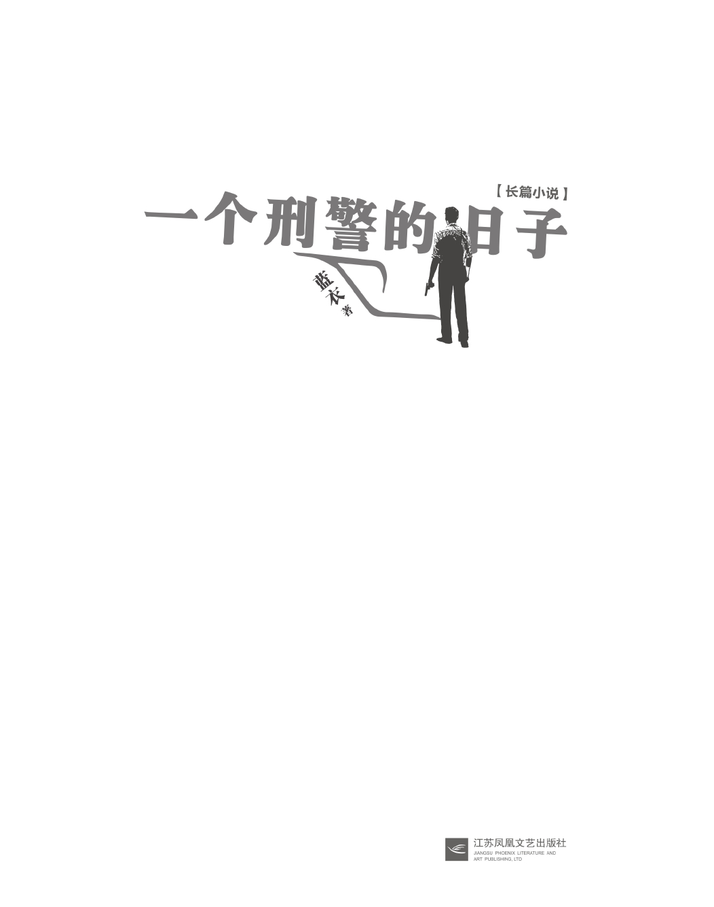
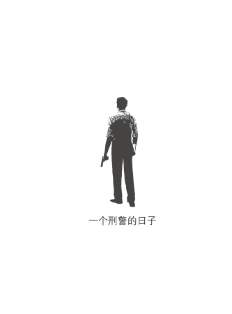

我叫刘子承，是一名北京刑警，从业23年。这本书是我对这23年刑警生活的一个总结。
从业以来，我见过、破过许多案子，绑架、强奸、贩毒、抢劫、谋杀……一应俱全，其中有小案，也有大案。最忙碌的时候，曾经一年破了200多个案子，但我想要放在这本书里的案子，都是我至今记忆犹新，甚至对案发细节历历在目的。
我曾想过，为什么偏偏是这些案子印在了我的脑海里，挥之不去。后来我恍然大悟，因为是它们改变了我，使我从青涩到成熟，通俗点说，它们刷新了我的三观。伴随着这些案子，我的刑警生涯经历了停职、表彰，我的家庭生活也走过了幸福、分离。
我凝视黑暗许久，黑暗亦在凝视着我。但到了最后，我没有融入黑暗，我仍是一名刑警，就像歌词里说的那样：
“金色盾牌，热血铸就。”

目录
引子
在太阳宫地区有一个人被杀了。女性，47岁，福建人。她租住在一个特别简陋的屋里，那个屋儿啥样儿呢？开了门就是床，也只有张床。她这床是砖砌的，上边放一木板，然后再铺上床褥之类的东西。
看到案发现场之前，我都不知道大首都还能有这样的地儿、这样的屋儿，最不可思议的是，竟然还有人租。隗哥说我应该先干几年片儿警，才能通透地了解脚下这片土地。
这个女受害人叫林苗苗，没有居住证等证件，只有张身份证在钱夹里。钱夹没有被盗，内有现金。屋内也没有翻找痕迹。就这个贫穷指数来说，也不太可能是窃贼的目标。
那会儿我刚入职，还不知道查案具体是个什么查法。于是隗哥带着我在附近摸排，了解被害人的情况。令人意外的事浮出了水面——这位年近半百的女性从事卖淫工作。
我当时心里想的是，这岁数出来做这行当，不是笑话儿吗？
她卖淫的主要对象是什么人呢？据群众反映是一帮民工，都是出来打工的。
47岁出来卖淫，对象是农民工，一次25块钱。这情形你想起来都不免恶心，觉得臭不要脸。这是她身上被贴的标签。以我们常人看来，这种女人，就是社会的渣子、败类，然后她被人扎死了，死得不名一文。没人同情。
她是因为五块钱被杀的，就像是在奚落她的身价。
通过不断地搞这个案子，走访、摸排、调查，后来我们把嫌疑人抓住了，就是一个普普通通的民工。为什么杀她？这民工说了：事先说好了一次25，完事儿我给了她30，她死活不肯把那5块钱找给我，还说什么没戴套，就得加5块！我说你要不找钱我可动手打人啦，老娘们要挟我说，我敢动她一下，她就找鸡头收拾我。我被逼得急了，就干脆拿刀把她干了！
这案子破的，说实话，都没什么价值。但后来队上收到一封信，我们看完都久久地沉默了。
案子破了之后，得通知家属认尸。林苗苗的女儿是福州医学院的学生，正在读博士。后来这个女孩给我们写了一封信——《我的伟大母亲》，信里的内容大致是这样的：
“亲爱的警察，你们的案子虽然破了，但是你们的态度让我们感到一丝丝凉意，不管你们怎么想，我为我有这么一个伟大的母亲而感到自豪，深深的自豪，我会永远记住我的母亲。她为了抚养我们姐弟长大，付出了常人所不知的辛苦与汗水，她为了弟弟的学费遇害，我不谈论她的行为，我只尊敬她的灵魂。她不可耻，至少在我心中，她无比伟岸。我爱她，一生一世。”
林苗苗家有两个孩子，一个女儿，一个儿子。儿子读高中，女儿大，读博士。这个女的47岁了，离婚之后一人带两个孩子，两个孩子都成才了。
我看完这封信后仿佛遭了一记晴天霹雳，心里特别不是滋味，感觉自己对人生的看法都有了改变，或者说是人生维度的一个转变。
我跟隗哥说，我干这行，主要是因为有破案的荣誉感在里边，可我却忘了对人性的挖掘。人性很复杂。我对任何案件都保有高度热忱，我喜欢解谜，我喜欢迷雾散去的那一刻，可我却不注意挖掘人性。
隗哥跟我讲了两个道理。
第一个，这个世界，哪有可能非黑即白呢？再者，善的对立面从来不是恶，而是伪善。你自以为你很善良，却戴着有色眼镜去看别人，这其实是伪善罢了。
第二个，对于刑警来说，破案是职责，是义务，但不一定就意味着成功。
林苗苗女儿的那封信就像是当头棒喝，让我明白了第一个道理。而第二个道理，直到我遇到了另外一起案子，才终于恍然大悟。
第一章
CHAPTER 1
刀口起舞刀背歇
刑警的生活常态就是游走于刀锋之上，与案件和尸体做伴，这不，西坝河又发现了一具尸体，一具被阉割的尸体。
“子承，子承，醒醒，起来起来。”
这一通摇晃，我迷迷瞪瞪睁眼，瞧见隗哥的脸有饼那么大。
“ 妈呀，隗哥！”我腾一下儿坐了起来，话都有点儿说不利索，“您……这是几点啊，干吗啊……”
从宿舍破了糊了半张瓦楞纸的窗户往出看，外面隐隐有点儿亮儿，但我合计不出来是几点。
“起来穿衣服！赶紧的，别磨蹭！出现场！”
我望着隗哥细高条儿的身影，囫囵套上衣服裤子跟他走了。我俩开着队里唯一的汽车，京OB1508，结果开到三元桥汽车开了锅，又换成打出租到的案发现场。
远远的，看到几位警队的技术人员，穿着制服戴着大壳帽儿，正跟一个老头儿说什么。地上一张白布盖着的显然是个人。那血流的，真对得起“血流成河”那成语。满地的血脚印也叫人瞧着瘆得慌。
隗哥把车一支，三步两步就走上前去。
“隗探长来啦。来来来，你再跟我们同事说说你发现他的情况。”技术人员赶忙招呼着。
老头子语音儿打颤，说话磕磕绊绊，我站隗哥身边儿跟着听。也许是见了血的缘故，清晨凛冽的空气中，我觉得血腥味特别浓。从前见我妈杀鸡，一盆血就很了不得了，现如今这一地血，说不吓人是假话。
这位老同志一贯起得早，又怕吵了家里人休息，就出来遛弯儿当晨练。河边儿是他每天的必经之路，今天他也是破晓就从家出来了，从家走到河边儿不过一刻钟的时间，就发现这儿黑乎乎一片，凑近一看，地上趴了个人，脚一打滑，咕咚一下儿就坐地上了，吓得哇哇叫，等他醒过闷儿来就跌跌撞撞跑去了派出所报警。
隗哥认真听着，不断地点头鼓励他多说点儿。隗哥果毅勇猛，但他长了张文质彬彬的脸，提个问题也是语气轻轻的，边听边做记录。
我们赶到现场这会儿，技术人员已经勘查得七七八八，尸体拍照、控制现场、记录尸体位置的详细信息，以及录取死者指纹等等。
“子承，你把布掀开我看看。”他说着递给我一双手套，自己也套上了手套。
我有点儿蒙。说实话，真蒙。进来刑警队这俩月，还没怎么正式出过案子，处理过小偷，搞过摸排，但正儿八经到案发现场，这还是头一回。头一回，就赶上死人了。
我是胆子挺大那种人，小时候也没少跟人打架，见血开瓢都是常事，再加上一直搞摔跤，虎实得很。但一掀开那白布，我就傻眼了。这人，根本就是泡在血里。血腥味儿一直闻着还没啥，这会儿加上直冲眼球的画面，就满不是那么回事儿了。这不是吓人不吓人了，是恶心。真恶心。
隗哥蹲了下去，认真地看着，脸凑得十分近。看了会儿他又把原本趴着的人翻了过来。我看见那人的正脸儿了，倒抽了口凉气，是个小伙子，说真的，跟我应该差不多年纪，也就是十八九二十岁的样子，没看清长什么模样我就别过了脸。又不敢让隗哥瞧出来我的反常，我就假模假式跟周围溜达。现场挺乱的，血脚印哪儿哪儿都是。
警车的声音呼啸而至，法医也来了。法医检查，隗哥就跟在他旁边，这时候我听见法医说：“这不对啊，下面儿的生殖器没了。”
接下来大家有事儿干了，十来号儿人一起在周边找，最后在离现场一两米开外的枯草里找到了。跟黄油似的，就那么一丢点大。看过我整个人都刺应。
受害人被搬上车前，我忍不住又看了看他。一身血污，新新的球鞋格外扎眼。白的染上了红，红得极不自然，透出一股子狰狞。那是双许多这个年纪的男孩子梦寐以求的限量款运动鞋，有钱也不见得买得到。
老实说，我都不知道自己是怎么回去的，隗哥从大茶缸里倒了杯茶给我，他说，子承，你脸都白了。
那不是害怕。说真的，不是害怕。是茫然，真就是茫然，我不懂得一个人怎么就那样儿了。他干了啥，他怎么就这样儿了。
法医的鉴定结果下午就来了，那小子胸部、后背被扎了将近40刀，当场毙命。致命伤是心脏处的一刀，死因是流血性休克死亡。生殖器官（阴茎）是死后割下来的。死者身上伤口深浅不一，但都是同一样凶器所致。而这把推测中的匕首，不知所踪。
技术、法医还有刑警全都聚在一起开会，一屋子人说什么的都有，案情分析如火如荼。隗哥不说话，坐在那儿一杯接一杯喝茶。我有一耳朵没一耳朵地听着，心中只有一个疑惑——到底有多大仇恨把人给杀了，40刀，还把那玩意儿给割下去了？
“你是怎么想的？”
我蹲在院儿里，看着早春刚有复苏迹象的大杨树发呆，隗哥递了一支烟给我。
“嗯？”猛地回神，我迎上了隗哥的视线。
“讨论会上我见你没说话。是不是给吓坏了？”
“倒也不是……”我吭吭哧哧，“是挺吓人，真没见过这阵仗……但是吧，也不是怕，是挺……慌的。您说，这得是多大仇多大怨啊，把人捅成筛子……”
“不理解吧？”
“不理解。”
“所以才要搞清楚原因啊。咱们的工作，说白了，就是寻找一个为什么。为什么人会犯罪，为什么人会杀人，为什么。”
我看着隗哥，烟雾缭绕下，他的眉眼透露着一股坚毅。
为什么？我头一次意识到，当警察不仅仅是抓小偷，当警察不仅仅是耍威风，当警察，面对的，是十万个为什么。对，为什么。隗哥说到了我心里。我很想知道这个为什么。在我的意识中，困惑先于了恐惧。
“现场足迹杂乱，血脚印尺码不一，钱包也没了，也许真是抢劫杀人？”我试探着说。说完方觉不妥。
隗哥果然来反驳我了：“且不说案发时间很诡异，并不是一个抢劫的好时段；再者，被害人年纪不大，也不该是抢劫者的合适目标。最重要的是，抢劫不会这样过度杀戮。更何况还是以求财为主。一般人抢劫，钱也就是随身那些，就算钱少得令人发指，也不至于这么虐杀人泄愤吧，没逻辑呀。”
我啧了一声。毫无头绪。夜深人静，一个很体面的小青年叫人扎成了筛子，还被割了下面儿那话儿……他为什么到这里来，为什么基本没有反抗受伤，为什么压根儿没人见过他，凶手有几个，动机是什么……疑问无穷多。
在首都，发生了这样凶残的案件，上面儿很重视。我们进行了大量的摸排走访，但是在走访的过程当中，我们发现谁也不认识这个死者。西坝河太阳宫一带我们真是走遍了，竟然没有一个人见过受害人。但那绝对是第一现场，毕竟血流漂杵，并非抛尸。
尸源找不到，不知道死者是谁，这就等于什么线索也没有，就等于大海里捞针了。
实在没办法，我们就在全市范围内发了一个协查通报，把体貌特征描述清楚，谁家孩子不见了来我们这儿认尸体。
协查通报大概发出了两个礼拜，有一对夫妇从韩国回来，说联系不上孩子了，一来二去，到了我们这儿。尸体一认，问：是你儿子吗？父亲点点头说：是我儿子。我看着他，在他脸上并看不到我所以为的那种悲伤。我们家一家四口，关系特别亲密，我想，要是我被人扎成筛子躺在这儿，我爸约莫要提刀去宰人。
死者叫金笛，朝鲜族，20岁，比我还大一岁。早先随父母去了韩国，自幼学油画，他油画水平很高，回国是为了在北京画院进修。我看了他的画，虽然我不懂艺术，但我觉得特别美，是有灵魂的那种美。我也看了他的学生证，是个挺帅的小伙子，帅，洋气，看着就比同龄人生活条件好，优越感从他的每个毛孔里渗出来。我们接触了他的同学、老师，都反映说金笛很有天赋，成绩优异。这么一个前途光明的青年，竟让人乱刀扎死还被割了那话儿，因为什么啊？
关于他的一切，都是从同学、老师那里得知的。他的父母基本没跟我们说什么。我十分不理解，问隗哥，怎么儿子被杀了他们这么冷漠不配合？隗哥告诉我说，不是所有死者家属都信任刑警，有很多甚至带着敌意，认为孩子死了是咱们的错。
年轻、有钱、艺术家。这仨身份出来，队上一部分人认为是谋财，一部分人认为是情杀，隗哥觉得都不是。
案子时间拖得长了，人手就越来越少了，没有那么大警力支持，毕竟这座城市每天都有犯罪在发生，我们才有多少人啊？真的，干不过来，有心无力。尤其这对夫妇又是那么个态度，就更不受待见了。
但隗哥坚持这案子一定要破，必须得破。没有一个人活该这么被对待，20岁，大好年华，前途无量，被人捅死还捅了这么多刀，最后还把那话儿给割了，这就不是人干的！是畜生！破，必须破！我必须把那个畜生从人堆儿里揪出来！
我跟着隗哥，决心也很大。一是怄气，你不信任我们，我们偏就要把案子办得漂漂亮亮；二是，我想知道为什么，为什么人好好儿活着就让人干死了，为什么杀人凶手可以疯狂至此。其实还有个三，我觉得，我跟隗哥，我们俩像孤胆英雄。
这天下午，隗哥带我去了个餐厅见一个人，是个跟隗哥年纪差不多的男的。长得怎么说呢，一看就不像好人。喝酒跟喝水似的，跟隗哥也不拘着，称兄道弟那个架势，搞得隗哥都像是黑社会安插在警队里的卧底了，令我十分疑惑。席间，这位道儿上的大哥谈及了金笛。
原来，这位艺术青年过着双重生活。白天上课画画儿，晚上出来喝酒泡歌厅。这你谁能想到啊？根本想不到。这位道儿上大哥，是隗哥的特殊情报人员，有些事儿我们警察去啥啥问不出来，这时候就得靠这些人了。我问隗哥，那他怎么就愿意给你提供情报啊？你说我们，一没钱，二没权，给不了人利益，也发不出啥豁免权，这些人精儿能给你白干？隗哥给了我俩字儿：走心。
下午隗哥在宿舍睡了一觉，醒了就叫上我，俩人打了辆车，直奔人鱼宫歌厅。说实话，当时我们对歌厅周围都进行过走访，但我们从没想过死者跟歌厅会有联系。
出来位个子不高的中年男人，大腹便便。
隗哥拿死者的照片给他看，他表示没什么印象，歌厅这种地儿，一大把人来来往往，他也不可能全记住。
隗哥不急也不恼，说：“没事儿，我不着急，你再回忆回忆。有时候记忆力是不怎么靠谱，你不着急可能就是想不起来。 ，你们这儿防火符合规范吗？好像老有小姐出入啊，执照你拿来给我看看。”那一脸的，来来来，我慢慢儿给你找事儿表演得太到位了。谁不明白呢，一个歌厅能不能开下去，跟我们密不可分。我们想找你事儿，就肯定能给你找出事儿来，一旦找出来事，你也就别开了。
“来来来，抽支烟。”歌厅老板的态度顿时来了个一百八十度大转弯。
隗哥用手推挡开了，他又来给我发烟，我给了他一句“你老实点儿”，配合隗哥一个白脸儿一个红脸儿。
“您看，咱们也是遵纪守法，违法乱纪的咱不干。我开个歌厅，看着好像怎么着似的，里面的门道您也知道。该上供的上供，该交保护费交保护费，就图个平平安安做个小买卖。这事我不愿意跟您说，我不是存心想瞒着您，是我也不愿意惹事。这个男孩是上我们这里来过，但一不是熟客，二……二我知道出事了。头俩月好些警察在周边摸排，我怕摊上事。就怕跟我们有什么瓜葛。”
“你什么时候见着他的？”
“挺久了，好像是个礼拜四。对礼拜四，那天送酒的来了。他们一伙人来的，六个七个人吧，都是老乡。喝酒来着，来得不早，也没叫小姐，几点走的我不知道，因为我走得早，这样，一会儿我让款台的小姑娘跟你们说。”
“都是些什么人啊？”隗哥问。
“都是年轻人，他们都差不多大，出手挺大方，我还让给送了果盘。一是，大家全是老乡，二是，想着这么愿意花钱的回头再来。”
“他们有什么冲突吗？”
“没有啊，要是有冲突，动手了，伙计就找我了，没找我。”
“你这样，你把那天的服务员给我叫来，子承，你去款台，问问收银员记不记得那帮人什么时候走的。”
这个案子，如坠迷雾。案发过去两个月了，我们只知道死者是谁，死者最后的行踪是在人鱼宫，离开时候是夜里两点到两点半左右，法医推断的死亡时间也差不多，也就是说，他离开人鱼宫之后就死了。这基本上可以确定，因为人鱼宫没有打斗的痕迹，也没检测出血迹，就是碎了个杯子，喝酒，喝得又多，杯子碰掉了都是常事。跟他喝酒的人没人知道是谁，只知道是年纪差不多的一帮男的，他们从哪儿来，又去了哪儿，无人知晓。
这事儿越来越奇怪了，一帮人出来耍，死了个小兄弟，是跟其他人火并了吗？不对，现场没有其他人的血迹，也没有激烈的打斗痕迹。那是这帮人把死者处决了？也不太对，如果是死者把他们惹毛了，一帮人还喝啥子酒，找个荒郊野外的背静地儿直接清理门户呗。尤其，根据死者的背景分析，这个人很有钱，也慷慨，见财起意也不大可能，更何况死者的财务状况没有异动。
“呦，换了个汉显呼机啊老张。”
“啊，数字那个坏了，头两天去丈母娘家表现，媳妇一高兴，给我换了个汉显的。”
我是疯跑着去食堂找隗哥的，跑得上气不接下气儿，隗哥看着我直乐，“子承，狗撵你啊？”
“隗哥！金笛身上没钱包，也没呼机啊！这么时髦的人，又喜欢出来混，哪可能没呼机！”
隗哥拿勺子敲了下儿搪瓷饭盆，“子承，可以，你还真是块儿干刑侦的料儿！”
饭都没吃，我俩就奔北京画院去了，死者的父母回了韩国，我们暂时联系不上，但他的呼机号老师同学肯定有人知道。
什么叫人走茶凉呢？一个人离开了，仿佛一切都没有变化。画院还是那个画院，老师还是老师，同学还是同学。只是院落披上了植被，只是老师还有那么多作品要忙，只是同学们还在寻找出路，一开始的震惊、悲伤，都被这一成不变的日子给淹没了。其实，我们除了自己，好像并不怎么关心周遭的一切。
去寻呼台的路上，我看着路边高大茂盛的杨树在风中摆动着叶子，看着骑自行车的人被太阳晒得提不起精神，看着落了灰的招牌一个挨一个地挤着，忽然觉得这城市竟然这般冷漠。所有的个体看似相互交织，实则却独立得那么明确。
还有谁在乎呢？一个不相关的人的死。
事发时每个人都那么激动，才不过两个月，就变得乏人问津。都说生命高贵，然而，此时看来，是不是显得过分廉价了些？
寻呼台很配合我们的工作，但记录查起来确实慢，隗哥中途被队上叫回去处理别的事，我一直在寻呼台等着，喝漂亮小姐姐端来的冰水。我比自己所以为的更在乎这起案件，却说不出原因。是因为受害人跟我差不多年龄吗？还是因为他死得太惨？抑或是不等水落石出迟迟无法落地的心在作祟？我不知道。但觉得有点讽刺——我与他素不相识，是完完全全的陌生人，却比谁都在意他的死亡原因。没有生命理应如此陨落。
等待并没有白费。寻呼台给我们整理了记录。案发当天联络机主的人并不多，其中一条引起了我们的注意。晚上七八点钟的时候，有一个座机让他回一个电话。这个座机号码，属于宣武门另外一家歌厅。
当晚，我跟隗哥就去了这家歌厅。还是找到经理，出示受害人的照片，跟人鱼宫那回一样，也是一问三不知的套路。隗哥也有套路，也是开与不开都在你一念之间那套说辞，这回更甚，威胁说你这歌厅回头被砸了也不一定。我都信了，真的，毕竟隗哥有道儿上的“朋友”。
事后我问隗哥，您真会找人砸歌厅啊？隗哥笑，反问我说：你觉得我有这本事吗？我憨笑。又跟他学了一招。真的，你面对这些社会人你不能没底气，你面对什么都得hold住场面，甭管真假，牛逼该吹出去就得吹出去。很多时候，警察办事，靠的就是底气。而归根结底，这个底气打哪儿来的呢？我很多年后才想明白，是正义必胜。虽然失败过无数次，但我仍旧坚信正义必胜。
最后，这经理跟我们撂了，说那天夜里九点钟，死者和一帮年轻人，其中有一个叫沈福的，从他们这儿走的，当时他们喝完酒了，要去下一家歌厅继续喝。继续去哪儿不知道，但他听了贼话儿，似乎是朝阳那边一个歌厅。
这就对上了。那家歌厅，肯定就是太阳宫的那家人鱼宫，也就是死者最后出现的地方。人鱼宫那边查不出动静也很正常，因为它就不是这帮孩子的根据地！没人认识他们是理所当然的。那么问题来了，他们是偶然去到人鱼宫然后金笛摊上事儿了，还是说他们蓄意去了个陌生的地儿让金笛出事呢？
那沈福又是个什么人呢？混混儿。无业青年。二十啷当岁。好喝酒，身边有一帮兄弟。可能在他那个年纪算号儿人物，有点儿号召力，但其实正经论，也不算个屁。
歌厅经理虽然知道这个沈福，但谈不上认识。我们是要找这个沈福的，因为按照现在已知的线索，死者金笛最后就是跟沈福和他那帮朋友在一起的。金笛出了事儿，他们应该知道点儿什么。
或者凶手就是他们。隗哥说。
这并非凭空猜测，近40处刀伤，一个人连扎别人40刀真得有极好的体力，若是一群人，就不奇怪了。可这是为啥呢？这年纪的人，最能撑得起肝胆相照，出来一起混一起寻乐子，弄个小团体，团结得不得了。这我有发言权啊，他们跟我年纪差不多。我们都在那个能为朋友两肋插刀的年纪。怎么就翻脸了呢？怎么头一分钟还称兄道弟一起喝酒，出门扭脸就把人杀了？杀了就杀了吧，把小鸡鸡割了算怎么档子事儿？抢大哥女人了？
我问隗哥，那为什么小团体的兄弟要杀自己人，隗哥也说不出为什么。他说，没那么多为什么，有时候人杀人就是一瞬间的杀意。
之后，我们围绕这个沈福开展工作，奇怪的是这个沈福已经找不到了。再一摸排，他们这一帮小团体的人，全都不在了，一个都不在了。常常出没的地方，已再没有他们的身影。那就更不对了，这个案件，也没有证据指向他们就是凶手，但就是找不着这帮人了。
这个沈福有个女朋友，我们走访到她，她表示沈福一直没跟她联系过。我们也侧面调查了她，真没有啥情感纠纷。隗哥嘱咐她，如果沈福跟她联系，一定要通知我们，隗哥是这么跟她说的，沈福犯了事儿，大事儿，他现在人间蒸发了，显然就是跑路不带你，所以你对他来说，明显就不重要。
姑娘听到这儿就不爱听了，嘴一撇，脸一别，摆明了告诉隗哥——你放屁，谁信你的鬼话。但隗哥一脸随和，不急不躁：我说的话你不爱听，我知道，搁谁谁也不爱听。可你不爱听，我也得说，因为这可能关系到你的人身安全。你对他不重要，他跑路不带你，再联系你，只有一个可能性，那就是缺钱了。人一旦缺钱，那就很不妙了。隗哥是让姑娘给轰出来的。
我们把这个案子的进展也向有关领导汇报了，有关领导对这个案子也是犹豫不决，说找不到证据，就不能证明是他们杀人，要把他定为嫌疑人的话，无疑就要投入大量警力，如果仅凭直觉找错了方向，就会产生大量工作，浪费大量警力。每天都有案件发生，你们太执着于这起案件，其他受害人你们就放弃了吗？
这话像一块石头砸在了我心上，燃起来的热情被一桶水兜头浇了下来。我们既不是福尔摩斯，也不是超人，有太多平凡琐碎的事儿等着我们处理。干不过来，这叫人莫名悲伤，我们再怎么努力，也不可能制止案件发生，案件总是要发生，而我们总像无头苍蝇跟在后面儿跑，终究还是跑不过来。
但隗哥很坚决地认为，就是他们干的。上面儿觉得这个案子目前就只能查到这儿了，要放放，隗哥不同意，他带着我也参与别的案件，但私下我们并没有停止调查。然而，不顺利，太不顺利，找不见沈福这个案子就又有点儿石沉大海的感觉。
事情的转机还是通过呼机的线索。我们虽然找不到这帮孩子了，但是让寻呼台配合我们的工作，监控了几个呼机号，也算是死马当成活马医。搞到这些呼机号还真是费了些周折，也是多方打探，其实主要是打探人的下落，但最后能得到的也就是呼机号，这帮人原本也是行踪不定，四处玩乐。好些号儿还都作废了。其实挺不靠谱，没想到，真叫我们撞上了。
呼机信息并不是回哪个电话，而是条汉显：你们要小心注意，警察已经找到我们了。
这么一条信息，足以确定沈福这伙人跟金笛被杀案有着密不可分的联系。隗哥说，你看，咱们推断的没错吧，一定是他们干的，要不在怕什么？但这也并不能作为直接证据，只能说它是个线索。但就是这么一条信息，更加坚定了隗哥和我继续跟进的决心。这里面有事儿，必须的。
由于找不到沈福一伙人，我们的工作就特别难以开展。但猫闻到了耗子味儿，不逮绝对不可能。想抓这个人，但一直就没这个人的踪影，他总不可能人间蒸发啊。难，真难。首先，没证据就不能确定他是嫌疑人，不确定就不能发通报调动警队资源，没有资源，抓捕的可能性就微乎其微。三个多月过去了，这案子就像漂在海上，浮浮沉沉。
忽然，机会来了。
沈福的女朋友，打电话到队上找隗哥。
隗哥果然料事如神！我对隗哥佩服得五体投地。
沈福找她要钱，这已经是第四次了。她说，沈福头一次联系她是在我们找过她之后大概两个星期，给她打的传呼，她把电话回过去，发现是沈福。这人说话云淡风轻，她问他一直不出现是怎么回事，他说没什么啊去外地了，刚回来，约她出来吃饭。她说警察到处找你，沈福说可能是因为前阵子我们砸了家歌厅，说宝贝你别说我找你，跟谁都别说，我躲躲事儿就过去了。
面儿一见上，沈福张嘴就是要钱。姑娘给了。没过一礼拜，传呼又来了，说让她往一个地儿送水。送水干什么？实际是骗她过去，还是要钱。有一就有二，有二就有三，第三回马上也跟着来了。事不过三，姑娘还一直心里搁着隗哥跟她说过的话，越想越害怕。至此，她不相信沈福了，她觉出不对了，打砸个歌厅事儿说大是大，可说小也小，怎么就一直躲着不出来还一直要钱呢？
隗哥拿死者金笛的照片给沈福的女友辨认，她说见过几次，有印象，因为小伙子不仅长得帅，还特别热情大方，几次大家一起出去玩儿，都是他埋单，你拦都拦不住，特实在那种。爱喝酒，跟所有朝鲜族人一样，能喝、爱喝。但说起矛盾嘛，姑娘左思右想连连摇头——没有呀，大家本来认识也没多久，哪儿来的矛盾呢？
自此，我又陷入了迷茫。会不会……我们的思路出了错？会不会是我们太主观太一厢情愿了？但隗哥坚持，他说，子承，不要太纠结原因。等真相浮出水面，因由自会昭然若揭。别动摇，咱们已然走到这儿了，对错都要查下去，哪怕是排除，哪怕是错了，错也有它存在的意义。查不一定对，不查一定会后悔。更何况咱们查到现在，这是唯一合理的推论，多人行凶、手法凶残，也恰恰是熟人，才会产生爱恨情仇进而导致过度杀戮，沈福一伙十分符合咱们的物理证据。
那就继续往下查吧，我跟定了隗哥！
隗哥分析，沈福一直躲藏在本地，没能跑，因为他手里没钱，无业青年嘛。别说往出跑了，日子久了吃饭都成问题。那他不敢回家，总得有地儿住。那么，说送水那回，姑娘去的地下室就很可能是他的藏身之所。
地下室，是这座复杂城市的地下心脏。南来北往的人涌入这座城市，首先选择的就是这种廉价的居所。也因此，这种环境极为复杂。既有做小买卖的商人，也有大学毕业搬出宿舍的大学生；有饭店的服务员，也有热爱摇滚乐的小青年；有奶孩子的村妇，也有失业小夫妻。
我们谁也没见过这个沈福，仅有个他女友的大概描述。调他户籍吧，一来不是本地人不那么容易，二来上头都说不让跟进了。那怎么办？我们派外线跟踪他那个女朋友，找到了一处地下室。隗哥带着我开了个房间，我们俩就住进去了。
那个时候害怕吗？
我当时刚当警察，心里必须颤颤的。毕竟这是头一次接触杀人犯，而且还是近距离的。那种激动，睡不着，又彷徨不知所措，也不知道你要干什么，身体颤颤的。有一点点恐惧，但另一方面，我觉得有隗哥在啊。跟着隗哥的这些日子，我总觉得隗哥是万能的。
我们在地下室住了三天，隗哥费劲巴拉从队上好不容易调来了一批准备人员，将近十个。结果到第四天的时候，其中一个队长说，这个案子不靠谱，走了。其他探组属于配合你，一看没戏，队长都走了，那人家可不就也跟着撤退了。最后，就我俩继续在那儿侦查。隗哥坚持。十分坚持。
就那么巧，当天下午四点钟，旁边房间突然就来了七个人，没见过的人。我隗哥说，子承，机不可失、时不再来，必须干了，再不干没机会了，他们有可能退房来了。
我说隗哥你别急，我上去问问出租部，给您确定一下。
隗哥说好，别愣头愣脑打草惊蛇，观察一下周边环境。沈福的女友没再搭理他，我怀疑他们觉出不对劲了，怕暴露，很可能就是要撤。
我一打探，嘿，隗哥果然料事如神，就是来办退房的。
隗哥问，你联系队上没有？
我一拍脑门。
猪脑子。隗哥骂。一句话说不到自己就不会想！
很好，我们俩人，就隗哥带了一把枪。一把枪，俩探员，七个嫌疑人，还大多未成年。事出突然，我慌张极了，不知道自己要做什么。隗哥说，子承，别愣着，抄家伙！
我抄什么家伙？我随手拿了个墩布，拿起来又觉得不行，墩布能干什么呀？隗哥来了一句“厨房抄菜刀去”，人就出去了。我想着去厨房拿菜刀，再回来肯定就来不及了。得了吧，最后我决定赤手空拳往里冲。
隗哥端枪，我紧紧跟在后头，这一冲进去，沈福也好，其他几个孩子也罢，都蒙了。隗哥拿枪的姿势标准，但他的手在颤抖。
事后我说，隗哥我瞧见你手抖了，您也害怕啊？他说不是，说子承，我在思考一个问题——这枪我开不开。如果我不开这个枪，有可能炸锅；但是我开了这个枪之后如果不响的话，这帮人就把咱俩都干了。知道吧？那个房间特别小，万一要开不响怎么办？这枪，咱们这种枪不响的机会特别大。
隗哥的那把枪是1964年的，而且长期不保养，开不响的可能远远大于开响喽。
不过，到最后隗哥也没开枪。
在这场对峙中，隗哥给我的第一感觉就是，不管面对什么场面，甭管对手是多少人，气势一定要足。隗哥个儿也高，拿着那枪一端，气势就是足。谁他妈也不许动。目光秒杀。我觉得他在这里面起到了关键作用。就那四个字儿，目光秒杀。
这帮人，真没一个敢动的。隗哥端枪对着他们，喊我说，子承上手铐。我说行嘞，还故意摸了摸后腰，其实哪儿他妈有枪啊。隗哥戏可足啦，又说，子承枪别走火儿，你枪别走火儿啊。我说成，我把枪别好了，这就去绑他们去。
虽然嘴上这么说，可实际情况却是，我不仅没枪，我也没铐子，什么都没有，要啥啥没有，都不用翻兜儿，绝对是兜儿比脸还干净。
正束手无策的时候，隗哥提醒我说，用鞋带呀。我说行，蹲下开始解那几个孩子的鞋带儿。我还故意掖了掖后腰里那把根本不存在的枪，实际上什么都没有，背后做一个动作而已，是有点儿戏精那意思，演着快上瘾了。鞋带这么三下五除二给撤下来，我问，隗哥，鞋带系哪儿啊？
你傻呀，隗哥吼我，系他们两个大拇哥，大拇哥系在一块儿，任何力量使不出来。 ，第一次使鞋带系嫌疑人他们大拇哥，就是隗哥教我的。把鞋带全解下来了，我去系去，当时的感觉也不知道是害怕、恐惧还是勇敢，第一次绑人居然用的是鞋带。其实也挺扯的。
我拿鞋带，把他们全给绑上了。弄利索之后，给单位打电话，让他们来接人。隗哥端着枪，在屋里就开始震慑，谁都不许动。他故意说子承你刚来参加工作，我真怕你枪会走火，我拿枪，你别动，不听话的，你打他们一个是一个，你练摔跤那么多年，这就派上用场了。这么一通言语震慑，这帮人就基本上没什么动作了。
当时我隗哥确定里面有一个叫沈福之后，就知道抓得没错，心里的石头也落地了。不一会儿队上车就来了，一大片人全都来了。同事都说，抓得漂亮啊！你们俩抓这么多人！队长也来了，把人往车上一装，直接带去了太阳宫派出所进行审问。
在讯问过程中有个很有意思的地方，我讯问了一天，没有一个承认的，都发含糊。因为没有证据，我不能光靠推理破案，又不是侦探小说。这就到了一个案子的瓶颈了。人抓到了，不等于案子就破了。局长也来了，讲话这是北京市挂账的一个案子，必破的一个案子，呵呵，又不是先前说先放放的时候了。为啥啊，人抓了，看到希望了。可是越抱有希望，我们压力越大。
上升到大案要案的高度，你要是抓错了人，尤其你还带枪了，就等着吃不了兜着走吧。但隗哥坚定地说，这个案子不是沈福干的，我负全责，一定是他！坚定不移，一定是他。就这样隗哥就把我们的信心又给鼓舞起来了，带着我们继续讯问。
到了第三天，其中一个从犯招了。他害怕呀，就这么关着他们，来回来去一个个提审，威逼利诱逐个击破。人都怕事儿，能躲则躲，一看躲不过去了，那事儿小的就扛不住了，他事儿小，他犯不上小事儿变大事儿啊！原来他们当时是五个人，仨人轮番拿刀扎的。这仨人扎，另俩从犯干吗呢？一个抬脑袋，一个抬腿，给死者扔到西坝河旁边了。搬尸。
说起这个青少年团体犯案的可怕之处，就在于它有等级制度。
这个就特别……怎么说呢，有点儿控制人那个意思。我们仨动手杀人了，你们俩地位低，轮不到你们俩，但你俩也别想置身事外。那其中一个孩子，有心计，求表现，扔完了以后，把死者的那话儿就给割了。割了，啪，还给扔了。回去跟为首的这个沈福这么一说， ，这个老大就高兴了，他就觉得自己倍儿有出息。
这个案子整个过程就是这样的。凶器后来带他们指认现场，也从河里捞出来了。这案子等于我们将被动转为了主动。先抓人，审讯，然后根据口供，收集了证据链。匕首出来了，哪儿来的，谁买的。人抓着了，血衣裤在哪儿，扔哪儿了，找回来比对血液，包括鞋印，等等。隗哥经常和我说，办案子，不能光凭直觉，但一个好刑警，必须有他的直觉，就是这么个道理。
结案之后我仔细想了想这起案子的杀人动机。林苗苗是为了五块钱死的，那么金笛呢？他的死不是因为钱。
说出来我都不信，因为什么？很简单！
酒是导火索，面子是根本问题。
就是喝多酒了。这个艺术小青年儿啊，家庭条件好。肯定好，那个年代，就跟父母出国了，在国外生活好多年，回来到画院进修油画。那他那个……说思维也好，习惯也好，或者说层次，跟嫌疑人他们就不一样。不一样还是他层次高，层次高不说，还有钱，说个这那的，都是别人不知道的。
那嫌疑人他们就觉得这个孩子爱吹牛，又看不上他们。得，矛盾就来了。尤其这个老大，平时吆五喝六惯了，都以他为中心，冷不丁这孩子加进来，说他们不知道的生活，花他们没有的钱，你这属于啥？属于邀买人心，你是要当老大是怎么的？最后，这个老大就给他干了，动机就这么简单，一条人命就没了。就是妒忌心！
你说他杀人动机，为钱也好，为情也好，都不是，就是妒忌心。咱们一块喝酒，你为什么那种表现，上我相熟的场子来喝酒，你不给面儿，又摔杯子，又干吗的，你装什么逼？其实不是，小伙子就是喝多了。他到北京来，没什么朋友，平时画画又枯燥，就爱上个歌厅娱乐娱乐，认识了老乡，就特愿意往一块儿凑，大家一起放松放松，你说小伙子是要出来混社会？真不是。
说起那会儿啊，咱们这儿土，人家国外洋，在人国外这都是正常娱乐。就跟咱现在去酒吧、去KTV一样，挺冤的其实。话说回来，这点事儿，本来你打他一顿也行，为什么要杀他呢？是因为沈福是圈里的大哥，我要巩固我大哥的地位，你不听我话，我必须给你搞了，我不搞你，另外五个人该不听我的了。
沈福的逻辑就是你是我兄弟，我带你玩，但你不能爬到我头上来，大家一起出来你敢这么牛逼，又是喝酒，又是摔杯子，又是耍酒疯，全都不行，出去给他干了，出去就弄死了。小孩特别帅，给弄死了。那帮人真狠，真往死了干。他们对自己人也特别凶狠，自己干自己人，基本不留活口。
案子破了之后，我审问的那些孩子一招供，我当时一下就从屋里蹿出来了，说我好大喜功也好，就那种感觉。压抑了四个多月，经手的头一个杀人案给破了。那个时候我对杀人还没有概念呢，正是这个案子给了我概念。兴奋，这个案子曾经顶着那么大压力，曾经那么不受重视，又一直浮浮沉沉云里雾里，终于拿下来了！
我从一楼蹦到三楼，去跟领导汇报，说案子破了，满楼地嚷嚷，压抑不住。后来他们说我，你神经病啊，犯病啦，小声点儿。可那种兴奋，实在是不会表达了，只能通过另外一种方式发泄，嚷嚷，手舞足蹈，用行为把它表现出来，很happy，就是很happy，那会儿如果放上音乐的话，准能跳起来。老实说，其实没有特别深层次的感受，就觉得新鲜和好奇，满足你的好奇心了，满足你的好胜心了，满足你拯救世界的欲望了。这种坏人必须得抓，恶人必须抓，黑白必须分明。
兜头一盆凉水浇下来，是这个案子破了之后，老两口来了，跟我们说了这么一段话。他们说，破不破这个案子，对我们又能怎么样呢？实际上这个案子破了，对我们又是一种伤害，他们都是好朋友，把我们儿子杀了，法律惩罚他们了，其实对我们又是一种伤害。这案子破不破对我们没有太大的关系，结果无非就是我们的孩子没了，破不破案是你公安局的事。
我一听就炸了。咱们刑警队把这个案子破了，你应该对我感激，最起码得表扬一下吧。心里那个憋屈啊，别提了。你儿子死了，死得不明不白，死得那么惨烈，你们也不配合工作，我们大浪淘沙似的跟进这个案子，抓捕又那么危险，怎么到头来还我又伤害你们一遍呢？不懂，真不懂。
但后来干刑警日子久了，经手了无数案件，凶杀案尤其多，杀人的手法花样百出都比不上杀人的理由层出不穷，我看待这个世界也终于明白了，它，一定不是非黑即白的。接触了那么多受害人家属，见过那么多陌生人流下的眼泪，我也懂得了伤害它是一种什么东西。
再翻回头来想这个朝鲜族孩子被杀案，实际上人家家属说的话特别有道理，这个案子破不破，跟他们没有关系，说得特别正确。无非是那时自己弱小的心理，想得到一些表扬，你得认可我，实际上不是那么回事，成年之后才懂，当时不懂。人死不能复生，也不像录影带可以倒带重来，你更没有机器猫的时光机能回到过去改变未来。
人死了，尘归尘土归土，枪毙杀人犯一百回受害人也不会回来。走就让他好好走吧，当父母的白发人送黑发人，亲眼瞧着儿子的远大前途陨落，他们能干什么？儿子遭受苦痛的时候他们还在过平常的生活，他们压根儿不知道儿子是怎样咽下最后一口气的，临死前是怎样流连于这个世界。不忍心。对，不忍心。你即便破了这个案子，即便给了他们一个交代，你也不过是再一次掀开他们血淋淋的伤口。那伤口结了浅浅一层痂，你又把它剥开来，以一个胜利者的姿态宣告你的成功，太残忍了。
我后来给他们寄过一封信，不知道他们有没有收到，是许多年后了，我在整理旧卷宗的时候，看到这起案件，把当时他们交给我的儿子的照片、画院的同学给的照片，还有一张旧学生证一起都寄给了他们。那上面，那个少年被定格在花样的年华里，以它去替代那个倒在血泊中的人，再合适不过。
案件总会结束，而伤痛不会。这是最残忍的。
破完案子那天，我心里不舒服，于是大半夜在城里溜达。11点多了，这座城市却仍旧忙碌着，洒水车清洗着地面，私家车一辆跟一辆呼啸而过，三五成群的男孩女孩相伴同行有说有笑，推着车子卖小吃的摊贩一脸疲惫手下却麻利地准备着下一份再下一份小吃，浓妆艳抹的妙龄女子踩着高跟鞋脚步匆匆，远处停着的豪车里大腹便便的金主抱着手机讲生意经。
这是一个平凡的夜晚，跟每个夜晚一样，不夜城的夜晚从来也没变过模样，谁来了谁走了，都是悄然无声，这边有人在亲人的眼泪中离世，那边有裹着胎膜的孩子在大夫手中嗷嗷落地。生与死，不因为任何人的意志而改变，每时每刻有条不紊地就这么进行着。
第二章
CHAPTER 2
大案巧破，小案大破
我们的规矩是没有作废的案子，影响牵连较大的案子我们要用巧劲来破，而小案更不能掉以轻心，反而要大破特破。
刑警的工作是代代相传的，一代带一代，师父给你立规矩。新入职的刑警刚入队，第一件事是先认个师父，但平常为了亲切，都称呼一声“哥哥”或是“姐姐”。
我师父姓隗，当时的职务是探长，后来他发展得非常好，北京很多著名的案子都是他破的。他非常正义，非常非常正义。他教我很多东西。那个时候我19岁，他的信念就深深地烙印在我心里头了，你认同了他，你就永远按照他的思维去走了。首先第一个，君子爱财，取之有道，不是我的，绝对不能取。第二个，理直气壮是一辈子，卑躬屈膝也是一辈子，你干什么不理直气壮啊？
我敬重隗哥，但同时我也特别怕他。我这一生当中，我所干的案子，所经历的东西，不及他的十分之一，北京博物馆陈列的好多经典案件，都是他搞的。譬如在望京那次，有几个歹徒开枪，我们击毙了两个，还有一个爬到烟囱上面，拿着枪，拿着手榴弹，你们谁上来，不是开枪就扔手榴弹，特警谁也不敢上去。隗哥戴一个钢盔，拿把54手枪就上去了，上去就给他拽下来了，那会儿他已经是行动队的副总队长了，这么大的官，冲到一线干活的没有几个，全国范围都算上也没几个。
新疆暴恐那次，有个暴徒开着车，绑一车炸药包，企图冲击天安门，在光华路给截下来了，特警拿着枪准备干他，干不着他，他躲在车里。隗哥拿一把枪就过去了，把玻璃打碎，一手就把点着的那个炸药给掐断了。还比如王立华，就是绑架明星吴若甫的那人，最后谁也不敢拍板，隗哥说抓，全程指挥就是他！他教了我太多东西，以至于当我回忆这些事情的时候，居然发现无从下笔。
隗哥教了我许多东西，令我印象格外深刻的一件事儿，是他逼着我写结案报告。我是个心中有想法但就是写不出来的人，可当警察的你得会写啊。笔头得灵，记录、报告、材料什么的，所有东西得通过一个“写”展现出来。你要把事情的人物、时间、地点、起因、经过、结果六个要素都写出来，才能把事情叙述清楚。但我当时也不会写，这时候隗哥跟我说，你得写日记。
可我懒啊，不写，写那玩意儿干吗，还不如抓几个坏人去。没想到隗哥真一个礼拜检查一次，前两次我没写他都和颜悦色叫我下回补上，到第三次的时候，他跟我说，你再不写我就打你了。我哪能当真？他看着那么斯文一人。
结果，赶上有回他喝多了，在屋里真打我来着，最气人的是，第二天一睡醒，他压根就忘了昨晚上是怎么揍我的。就是我这个师父，帮我养成了一种习惯，拿着笔、笔记本，这么多年就记下来了。我没事干就记一下，没事干就记一下，老想着，不写师父要打，真打。
这一写就是好多年过去了。
我算是出师了，隗哥也被调到了别的地方。不仅如此，现如今我也有了两个小徒弟，一个叫夏新亮，另一个叫李昱刚。
毫不客气的，我给这俩孩子上的第一课，就是必须写结案报告！
当然，这些年除了破案子，从一个菜鸟刑警蜕变得成熟一些，我还解决了一件终身大事——结婚，她叫婷婷。
说起结婚这件事，我就打心底觉得对不住她。结婚那年，订的11月2号结婚，结果11月1号我被派去抓人了。去的邯郸，抓一拨抢劫的，要把人抓到位。说你去不去？我是不想去，但你说要让小同志挑大梁，我又怕他们出现问题。结果当天下午我们就开车去邯郸了，到良乡，车坏了，又迅速借了一辆小面包往邯郸赶。人是抓到了，抓到的时候将近凌晨两三点了。
那都不能说第二天结婚了，过了12点就是今天了。我跟队友说你们继续工作审讯，我就不问了得回去了，明天我要去结婚。大夜里，我从邯郸一路开回了北京。本来约好了早晨7点钟婚车来接，结果我睡着了，睡死了，婚车给我打电话：你赶紧起床。我说，干吗？我困着呢。那边说你今天结婚。我一猛子就醒了。对，结婚。赶紧起来穿好衣服，就到婚礼现场了，一路上参加我婚礼的队友给我买牙膏的、买牙刷的，买什么的都有，边走就把脸洗了把牙刷了。朋友问说，你结婚还缺什么不？我前脚说什么都不缺了，后脚一拍脑门，不对，红包和喜糖还没拿。就这样，等于匆匆忙忙就把婚结了。
娶到媳妇儿了，11月2号结的婚，3号就是我们婚期的蜜月旅行，去云南。她其实想出国，但我在职不能去。她便就活我了，降了一级别。结果呢，嘿，在蜜月旅行过程当中我接了一电话，让回来，有些案子得搞，必须得回来。我当时心里非常不高兴，但为了案子我还是回来了，带着媳妇儿一起回来的。回来到北京是下午四五点钟，坐飞机就回来了。北京有一个讲究，一个月蜜月期，不能空房子，我媳妇说你能不能今儿晚上别回单位了，明天再走，我说行。
结果晚上8点钟单位又给我打一电话，说必须得回来。那就回去吧，穿好衣服我就准备走。我媳妇儿就不让我走，我死活要走，我媳妇急了，说，我就横在门口了，你要走就从我身上迈过去，你要走咱俩这日子就别过了。但我还是走了，去搞案子，结果这案子一搞就将近一个月没回家。
你说这是个什么狗屁丈夫啊，可他就是我。
正做着自我反思，我这边儿接了一电话，有个男的报案，说家里被入室抢劫了，父母在家中惨死。
啥别说了，带上俩徒弟，走吧。
到了案发现场，技术人员已经封锁了现场，开始勘查，门外堵了不少围观群众，怎么赶也赶不走。我嘱咐俩徒弟：“都把鞋套穿上。”
进入屋，视觉冲击力非常强。现场异常惨烈，老爷子死在要出卧室没出卧室的地方，后背全是刀伤，屋里的血流得哪儿哪儿都是。老太太死在床上，脖子上有一根领带勒着，前胸、脑袋上都有刀伤。老爷子身上有十几刀，我数了数十六七刀不止，老太太少，扎了有七八刀。
“这是男死者的领带吧？”李昱刚问。
“看样子应该是。”
我瞧着老太太一侧，床边的扶手椅上，还有衬衫西裤等，唯独缺了领带。
这是个两室一厅的房子，老夫妇住一间，儿子住一间。老夫妇的卧室是一副人间炼狱，儿子的卧室却是一尘不染，十分整洁，被子叠得跟豆腐块似的。
我们仨仔细走了一圈，为了不打扰技术组工作，就从案发现场出来了。
“儿子叫陈晨，他报的警。说是入室抢劫，他回家来发现的。”李昱刚点上一支烟，把烟盒递给了我。
“‘入室抢劫’。”我点烟，重复道。
“真够凶残的，俩人那么一把年纪了，这狠手下的。”夏新亮不抽烟，也发自内心地烦我俩抽烟这毛病。
“说是仇杀也没问题。以这个现场来说没问题。”我又补充了一句。
李昱刚点头，“嗯，也没问题。案发现场就在老夫妇的卧室，儿子那屋儿我看不像有人进去过。您是怀疑并非入室抢劫？”
“那领带我隐隐觉得不舒服。”我说，“带刀来抢劫，有备而来，拿死者领带干吗呢？”
“情急之下？”
我想了想，整个杀人过程会是什么情况呢？
两个被害人，几个凶手？
如果是入室抢劫，要提前踩点的吧？一家三口，老夫妇外加一个儿子。两男一女，一个人肯定干不来。要说不踩点儿随机吧，那可跟中奖差不多了。
目前已知情况太少，啥也推测不出来。
抽完一支烟，我说：“走吧，去见见这家儿子，看看他能给咱提供点儿啥情报。”
报案人陈晨给我的第一印象是斯文，白白净净，瘦高个儿。他在证券公司上班，研究生毕业，入职两年，前途可观，这都已经不是白领了，叫金领。给我们介绍情况也十分有条不紊，说他上周出差，一直没回家，结果案发当天中午回到家，一进门，发现父母遇害，马上报警了。特别冷静，这个孩子十分冷静，面对父母被杀，一般人做不到这么冷静。不知道高才生是不是都这么有水平。
我说讲讲你爸妈吧，给我们也介绍介绍情况。他说父母都是大学老师，爷爷奶奶也是读书人，是传统的书香门第。我说你呢，你是不是就是那种“别人家的孩子”，从小到大三好学生那种。他有点儿害羞地笑了。
由于现在并不能判断他父母遇害的真正原因，我问的就有点儿多，问了他父母有什么爱好吗，跳广场舞吗，他说不跳。我一想也对，人家都是高级知识分子，这种人不出来跳广场舞。又问了问他父母平时的社交，都跟什么人来往、走动，他说据他所知也就是一些同事，老同学。这些人有人跟你父母有矛盾吗？没有。平时我父母都特别和善。还没退休啊？快了，但是大学要返聘。诸如此类，种种问题他都对答如流。感觉他平时跟父母关系应该很好，所以这些情况他才能了如指掌。
应技术部要求，我跟他核实了他今天穿的衣服、鞋子，鞋子也采集了脚印，因为他进过现场，这些都得拿来对比筛除，比如掉落的纤维啊，现场留下的足迹啊。包括指纹也要采集，这些都要用以排除。
一系列过程他都很配合，我问他答，李昱刚和夏新亮在一旁记录。
差不多我就送他出去了，跟他说日后想起什么情况就来找我们，我们有什么疑问也会再去打扰他，他都说没问题。
询问完陈晨，我们还得去外围调查。死者的邻居、同事都需要走一走，摸一摸。
大学的同事这边，确实像陈晨跟我们说的差不多，他父母的同事跟他们关系都很好，很了解他们家，没利益矛盾。综合整理一下大家的说法——受害人是大学老师，从业多年，家庭条件很好，一家人是很传统的书香门第。
儿子陈晨自幼由爷爷奶奶抚养长大，其抚养方式称得上是标准溺爱，这是第一个。第二个，后来他上学了，搬回去和父母一起住。孩子成绩特别好，一路都是重点学校，毕业后在证券公司上班，一个月挣两三万，工作能力卓越，是一个非常乖的孩子，恨不得出门穿什么衣服都由他父母来决定，特别规整听话的孩子。一家人关系非常紧密。
到了邻居这边儿，得到的信息也差不多，陈晨就是那种典型的“别人家的孩子”，让他父母引以为豪。但引起我注意的是，提供这些情报的人，是被害人两夫妇的队友。太极队。原来老头儿老太太好打太极，每天清晨五六点，准在楼下的街心花园打太极。
而案发这天，俩人都没出现。这是我们万万没预料到的，因为儿子陈晨根本没跟我们提及。我跟李昱刚我俩一清早上小区来，无非是老年人起得早，你要想找他们问情况，早上去人最齐，这才知道。
在肯德基坐着，李昱刚点了餐，我们仨坐在靠窗的位置，透过硕大的落地窗我往外看，街上行人不多，跟餐厅里一样，几乎没有上班族的踪影。低头看看表，指针指向了10。
“刘哥，咱一会儿吃完上哪儿去？大学去过了，小区也走过了。”
“上陈晨单位看看吧。”
“他在单位吗？”李昱刚看向我，“父母刚遭遇不测，没心情上班吧？用不用提前先跟他联系一下？别扑空。”
“就是要扑空。”我说。
“啊？”夏新亮一脸狐疑。
上陈晨单位走了一趟，小伙子果然请了假，我跟他们主管聊了聊，告诉了他陈晨家里出事儿的情况。姓金的主管十分震惊，说陈晨请假，并非这两天的事儿，这反倒让我们吃了一惊。
这是怎么档子事儿呢？
原来，陈晨来这家证券公司工作后不久，跟同部门的女上司搞起了婚外恋。
他喜欢上的这个女孩儿，应该说是女人，比他大八岁，这个女人有家室有孩子，然而俩人还是恋上了。陈晨跟这个女人好了，但是他的父母极其反对，儿子不能找一个二婚的呀，也不能破坏人家家庭啊，他们根本就不同意，就把他经济命脉给掐了，第一个，你不能再给这女的花钱了；第二个，你开了工资都得给家里。
金主管怎么知道这事儿的？就是陈晨的父亲找到的他，跟他说的陈晨的情况，说领导你得配合我们，工资不能直接发给他了。弄得金主管都疯了，没见过这情况啊！
年轻人来上班，都是独立个体，工作中遇到问题也好，生活里出了难事也罢，这归根结底都是自己的事儿，哪能说你这个年纪都进社会了，你有事还要你父母插手的啊！而且这手插得都叫他不知所措，我把工资不开给员工开给员工家属？真是活久见了！
金主管当然不同意，他说有问题可以解决，他可以找他们谈话，也可以整顿办公室风气，但万万不能截留工资啊。这位老父亲一听，也是绝了，讲话，那我不能叫我儿子再来你们这里上班了，工资你也不要开了，他辞职了。他来单位老能见着这女的，前途都毁了，这个班儿不上也罢。
后来陈晨来了，金主管也跟他谈话了，陈晨说你别理我爸，他教书育人职业病好不了了，我上班，好好儿上班，绝对不再搞办公室恋情了。然而话虽然这么说，但自此之后陈晨上班就开始零零散散的了。
目前陈晨是我的头号怀疑对象。这一点我还没跟徒弟们说。有很多不对劲，但这些不对劲儿只是种感觉，目前还没有真凭实据。
金主管把他知道的都告诉了我们，我们提出得见见这个女的，金主管说没问题，她就在公司呢，说着拿起了电话，拨通了内线。
由于涉及隐私，金主管给我们安排了间会议室。这个叫罗美华的女人来得挺快。她一脚踏进会议室，我就在观察她。个子不矮，不胖不瘦，长得落落大方，脸上挂着职业式的微笑，讲话也很干练：“听老金说你们有事找我？您二位是？”
我们没让金主管告诉她我们是警察，就是想捕捉她的真实反应。因为目前并不知道她在这起案件中承担怎样的角色。
“罗小姐您好。”我站了起来，“我们是警察，找您了解点儿情况。”
罗美华一脸茫然，“警察？找我了解情况？”
这不像是装出来的，她的不解与迷茫，出自本能反应。
我们把陈晨父母被害的事前前后后一说，罗美华一边听一边面色凝重起来，最后她声音打颤地问：“你们来找我，是怕我有危险吗？那我女儿有没有事？天哪，我赶紧给幼儿园打个电话。”
我摁住了她的手腕，“罗小姐，你先不要慌，目前还不知道他父母的死与他有没有联系。”
“可是，可是……”
“您放心，我们会对您提供保护，包括您的家人，但在此之前，您得跟我们说说你俩之间的具体情况。”
罗美华把她跟陈晨恋爱的经过原原本本都告诉了我们。罗美华的女儿刚上幼儿园，她在生完女儿之后休了很长时间的假，老公忙于工作对她们母女疏于照料，她也是丧偶式育儿大军里的一员。后来孩子上了幼儿园她重新出来工作，在工作中认识了陈晨，小伙子既老实又上进，工作中是她的好帮手，生活上也对她关照有加、无微不至，不仅对她特别好，对她女儿也好。
渐渐的，罗美华的心就产生了偏移。女人一旦变心，就很难回头了。罗美华也是一心一意对陈晨。她说，陈晨对她说——我上学时候只顾着学习了，没有过爱情，也不知道怎么跟人谈恋爱，遇到你，你工作中对我特别耐心，又是帮我又是提拔我，我一下儿就温暖了，我就忽然懂了什么是爱了。我爱上你了，就是你了，从来没人对我这么好过，从来没人这么懂我。
这倒是很说明问题，也是特别突出的社会问题。现在的年轻人似乎进了个怪圈。读书时候父母学校一起抓，不许早恋不许搞男女关系，然后一毕业，爸妈就变了，就开始催了，你怎么还不找女朋友，你怎么还不找男朋友，那谁家的闺女都怀孕了，你怎么连个异性朋友都没有？
废话，可能有吗？他该恋爱的时候全把时间用在读书上了，读了书该搞事业了，你又质疑他怎么这么笨连个恋爱对象都没有。陈晨显然也是这样，读书时候用力过猛，突然到了社会上，有一个大姐照顾他，大姐带着小弟，有吃有喝有玩的，能不开心吗？能不一下子沉迷吗？
这小子发完工资所有的钱都给罗美华，我喜欢你，什么全给你，你拿去用，你给咱闺女多买点儿好吃的好玩儿的，赶上假期俩人就带孩子旅游去，不知道的都以为这就是其乐融融的一家人呢。日子久了，陈晨决定两人一起生活，说不行咱俩就私奔，你们娘俩的生活我全管了，从前你没人依靠，现在你有我。
罗美华特别感动，她也特别喜欢他，可是她有家有孩子，这么跟人跑了终究不是事儿，离婚吧，又不是儿戏，而且还有闺女的抚养权问题。迫于种种压力，罗美华
了，说咱俩有爱就行了，就这么在一起就行了，真私奔了我的家怎么办，这怎么办，那怎么办。陈晨说不行，我就得和你在一起，我爱你和妹妹，我能当个好爸爸，咱俩不再要孩子都行，你带着妹妹跟我走。
在这个过程当中，陈晨爸妈知道了陈晨跟有夫之妇谈恋爱的事儿，炸了，车也给收回来了，工资也没收了，班儿也不叫上了，恨不能把他锁起来天天看着。陈晨挣扎过，闹过，但终究拗不过他父母。罗美华这时候也有点儿清醒了，就跟陈晨说，不行咱俩就算了，没路可走了，咱们没路可走了。
我问罗美华最后见陈晨是什么时候，她说是上礼拜，礼拜三，她记得特别清楚，那天她去跑客户，陈晨找去了，说让她等着，定不辜负她跟妹妹，说一定会给她个说法，还说你啥都不用管，我一定会说服我父母，这是第一步。
我算了一下，时间上来说，是陈晨父母被杀前三天，如此看来，陈晨是把父母的反对解决了，但不是用谈的，很可能是用极端暴力模式解决的。
杀父弑母，什么样的仇恨能叫一个人兽性至此？
重回案发现场，我反复不停地在思考这个问题。
法医的鉴定结果是，受害人夫妇死于凌晨三点至早九点间。这就是个区间范围，具体不下来。由于尸体是24小时就僵硬，出现尸斑尸块，前后如果差五六个小时的话，是谁也验不出来的。这中间肯定有误差，因为那九点钟杀的人跟凌晨三点杀的人，中间差五六个小时，不会有特别大的区别。我们什么证据都没有，只能听取报案人也就是陈晨的口供，他说他一直出差，中午才回来，我就不能说他凌晨三点杀了人。
然而，据我推测，人应该就死在凌晨。我这么推测不是没道理的。老头儿老太太有早起打太极的习惯，五六点钟要准时去的，他们不可能睡到九点在睡梦中被杀害，更不可能六点钟他们儿子走了还在熟睡。这是不符合二老的活动规律的。尤其，老年人觉少，即便不去打太极，也不可能继续躺着睡，睡不着的。
另外，在案发现场还有一个很大的疑点，那就是发现了两个空的啤酒瓶子，就随手扔在陈晨房间。这就有点奇怪了，陈晨说他出差了一星期，那么他屋子里的啤酒瓶子就应该是一周前的……也就是说，这一星期的时间，陈晨的父母都没有把那两个瓶子收拾扔掉？
通过俩老人死亡的位置和衣着状态，我很确定他们是在熟睡中被杀死的。这错不了。我来还原现场，就是再来确定这一点。
我怀疑陈晨，所以假定凶手就是他一人。下手时间参考法医意见就设置在凌晨三点。那么，会发生什么？发生什么会反映出我面前的被害现场？
我盯着衔接客厅与主卧室的走廊，在头脑中还原当时那惨绝人寰的暴力现场。
凌晨三点钟，凶手陈晨抄着一把刀就进他爸妈卧室里去了，进去之后，先干他爹，得先干男的，男的劲儿大反抗概率大呀！先干脑袋，开始扎。扎完脑袋，开始扎胸。差不多了，人动不了了。
在扎老爷子的过程中，老太太醒了，不可能不醒。但醒了恐怕达不到足够清醒，她也许会问：儿子你干吗呢？
对于凶手来说，此刻他就得采取行动了，调过头来又扎他妈，扎他妈的同时，他爸起来了，想呼救，往床下跑。得呼救啊，往下跑。
凶手肯定急眼了，顺手把旁边他爸放在扶手椅上的领带给抄了起来。拿领带一打扣，勒着脖子之后，蹬着脑袋脚一踹，把他妈给勒死了。这一点法医可以佐证，女死者死于机械性窒息。男死者呢，死于内部大出血。
他一勒他妈，他爸那会儿迷迷瞪瞪想回来救他媳妇儿。一回来，啪！摔倒在地下了，这个时候他身上已经有六七刀了，但还没死呢。凶手等着他妈没气了，又过来补了他爸两刀，全都杀死了。
走到两个受害人死亡的位置，回想他们死亡时的状态，我觉得，我的推理应该是没错的。符合现场痕迹、符合法医推论、符合行为模式。当时陈晨报案的时候很冷静，这是一个非常冷静的孩子。爸妈死了也没惊慌，从头到尾是非常冷静的。
“刘哥，我把材料捋了一遍，陈晨的口供前后矛盾之处可有不少啊。”
我看向李昱刚，瞧他戴着“防毒面具”那德行，绷不住想踹他屁股一脚。我也是惯着孩子，真是惯着孩子，我姐说我一点儿没错儿。李昱刚对味道敏感，受不了犯罪现场的血腥、腐败气息，我就跟他说你偷着戴口罩不要紧，有我呢。但是你也不能这么嚣张吧？你说他像个什么样子，口罩就口罩吧，他戴了个豪华版自带空气流通版本的巨型口罩！搁谁谁不想揍他啊！
“走，出去说。”我扶额。
“ ！就等您这句呢！”
他戴口罩我看不见他的表情，但那双弯弯的眼睛出卖了他憨笑的神情。
“李昱刚我跟你说，你这个口罩，我不想在犯罪现场看见第二回！”
上了车，我点上烟，直视着李昱刚的眼睛。
“我……我还特意置办的，买了仨呢……真挺贵的……”
“你这不像话！极其不像话！咱们出来办案，环境是差，但咱们有规定，你说规定是死的，可以灵活，但不是这么个灵活法儿。”
“这不是就咱们仨嘛……”李昱刚的声音很小。
夏新亮没戴口罩，他狠狠瞪了李昱刚一眼。
“但你知不知道什么叫隔墙有耳？知不知道这种信息化时代每个人的手机都是手雷？亏你还是互联网达人，你说但凡谁把你啪一拍，媒体再一宣传，警局不要脸面的？全体公安干警都跟着你不要脸面的？”
李昱刚头垂得低低的，“刘哥我错了……”
“甭装可怜了，说正事儿。材料都哪儿对不上。”
“噌”，小脑袋抬起来了，脸上一扫阴霾，李昱刚开始滔滔不绝：“第一遍材料出来之后，这小子特别冷静，我就觉得不对，但是咱们没有时间对他进行工作，忙着围现场转呢。”
“哦？”我看向他，原来他也觉得不对了。小同志很敏感嘛。不仅敏感，还能细致地再过一遍口供，这很可以。
“咱们一共找过他两次，他都很冷静。他越冷静，我越觉得这冷静背后有让人不寒而栗的东西。我就开始比对这两回的口供，找细节，专找细节，譬如头一回他报案时候的穿戴，这咱们是看在眼里的。可第二回问他你那天穿的什么鞋，穿的什么袜子，穿的什么裤子。对不上。跟咱们观察的不一样。感觉他就是随便说说。虽然对答如流，但就是随便说说的感觉。”
我们的工作，不仅仅需要推理能力，更要有笔头功夫，所有的东西你要录音、你要记录整理，因为大脑很多时候里面存的东西是不恒定的。很多事你以为归你以为，真相归真相。这个时候，记录就是一件特别有必要的事了。那一个材料整理出来，我们之后反过来细节要盯它。我们材料出来的时候是非常细的，通过整个细的过程发现不对，然后进行再扩大。
“第二个，就是现场了。案发的卧室有大量被翻找的痕迹，符合陈晨说的抢劫杀人，但是，他的房间，他自己住那屋儿，是没有翻找痕迹的。很整齐，哪儿哪儿都特别整齐。陈晨说他屋内没有钱财，他知道可凶手会知道吗？不知道，不可能知道。人都杀了，要抢劫了，不可能说就可着一屋儿翻腾。”
夏新亮补充道：“这就要说到咱们提取的痕迹这方面了。指纹没有外来的，脚印没有外来的，包括纤维，等等，这屋里，就没有外人进去过的迹象。一个再专业、再缜密的犯罪分子，即便准备得再充足，也往往百密一疏。没有丁点疏漏的概率微乎其微，那鉴证科啥都没发现，是不是可以说明，这个屋子里，从来没进来过外人？”
我点点头，示意他俩继续说。
“陈晨的嫌疑很大！”李昱刚说得斩钉截铁。
夏新亮则平静许多，点头说：“咱们大量工作已经做出来了，比如他跟父母的矛盾这些事情，咱们通过走访已经知道了。包括监控我也查了。甚至他说他去找的那个朋友。就以前那个同事，他都不知道人家早已经离开北京了。妥妥又是瞎话。我觉得我再找他谈，又全是不合扣的东西。”
我们正说着，我手机响了，一看，是罗美华的号码。 ，这很奇怪。她不是去上海出差了吗，说是没有必要就避免联系，她怕她老公知道她这点儿破事儿，也因此谢绝了我们的保护，态度很坚决。
我看了眼俩徒弟，他们俩也看向我。
电话一接通，我们没听见罗美华说话，倒是听见一个小女孩的稚嫩声音。
“旭哥哥，旭哥哥，这个乐高我插不上呀。”
咝啦咝啦，像是布料的摩擦声穿插其间。
坐在副驾驶的李昱刚抄过了他的笔记本电脑。
“陈晨，你到底带我和妹妹去哪儿呀？车都开这么久了，这都要出北京了吧？”
“着什么急呀你，平时上班就忙忙叨叨，咱们一家三口出来度假你快放松会儿吧。都交给我，不用你操心。你快帮妹妹看看怎么插不上。”
“你还知道我上班忙呀，手头还好几个活儿呢，你这……急急忙忙把我们接上，妹妹打电话给我的时候我都惊了！”
“说到这儿我倒想问问了，你干吗不接我电话？妹妹给你打了好几个，最后还转去语音信箱了。”
“我……我那会儿在开会呀。我怎么知道你上幼儿园把妹妹接出来了。你也太大胆了你。”
“妈妈，妈妈，你帮我插呀——”
“来来来，给妈妈，是这个小汽车的门对吧？妹妹，你看，国道110，认识上面的数字吗？110。跟妈妈读。”
这时我看到李昱刚朝我比了一个OK的手势。
咝咝啦啦中，我挂断了电话。不能浪费电，李昱刚已经定位上他们了。毫无疑问，这是一通求救电话，陈晨把罗美华母女二人劫持了。
我给罗美华发了条短信，只有一个逗号。这是提示她电话我已收到。别的不敢发，我怕陈晨看到引起他情绪激动。
“刘哥，他们确实在110国道的延庆路段。”
“你联系交警大队，让他们给你权限调取天网摄像头，一定要第一时间掌握他们的动态！我发警报给延庆方面，这个涉及儿童绑架不能有半点闪失。”
“没问题！”
“你坐镇，我和夏新亮我们俩奔延庆。”
“他带走母女俩想干吗呀？咱们没提审他啊，没刺激他啊。”
李昱刚的问题，夏新亮给出了解释，“回避真相，也是一种自我保护。就像闸盒里的保险丝，烧断了，但电路不会遭到破坏。陈晨把他父母杀了，这种现实是会把人压垮的，那他怎么办？你说他自欺欺人也罢，你说他避而不谈也罢，这都是让他逃避良心拷问的手段。
“这个时候，罗美华跟她女儿既是他逃避真相的避风港，也是他心灵的寄托与慰藉。这么说来这母女二人就安全吗？不，恰恰相反，她们刚好处于旋涡的中心。陈晨为什么杀他父母？原因可能有许多，譬如对他的限制啊，让他身心不自由活得没自我啊，但导火索正是这不被家庭接受的母女二人。他为了她们把自己爹妈都宰了，如果他得不到预期回报，后果不堪设想。”
延庆警方十分给力，他们调动了当地交警资源，交警骑着摩托追上了陈晨的车，以超速为名检查驾驶证，拖住他的这几分钟，刑警们上了。陈晨想跑来着，结果被直接拿下了。
我们快开到的时候，收到了这好消息，罗美华母女平安。
把陈晨押解回队上，我一直忘不了给他戴上铐子带走时，罗美华的女儿哭得上气不接下气，反反复复地嚎叫，就一句话——你们干吗，放开旭哥哥。他被铐住的双手掩盖在衣服下，小姑娘是看不见的，但她有预感，她仿佛知道自此一别，即是永别了。罗美华也哭了，哭得默不作声。眼泪像断了线的珍珠，扑簌扑簌往下掉，掉在水泥地上，掷地有声。陈晨的眼圈也泛红了，他回头看着她们，挪不开步子。
夏新亮跟李昱刚审着他，但一直没什么进展。陈晨就是不说话，问什么都不说，眼神空空，仿佛就不在这个国度里。夏新亮说得对，就是保险丝崩坏的情形。不运转了。这个人的思维停滞不前了。就像一个封闭的系统，不再接收外界讯息。
对于他来说，这就是最坏的情形了。打破虚幻，直面现实。现实过于残酷，以至于大脑感官都关闭了。
我把夏新亮跟李昱刚叫了出来，剩陈晨一人坐在审讯室里。
让他静静吧。我说。他这会儿听不进去任何话。你们也都歇歇，成宿跟他熬着，你们又不是铁人，都先休息休息。
俩孩子回宿舍了，我在院里抽抽烟。
事情的转机出现在晚上8点多，我拿着档案进了审讯室，没跟陈晨说话，而是低头翻看手里的档案夹。这时我听见他说：“大哥，你给我买瓶啤酒行吗？”
我一听，有戏了。要饭吃了，说明他的大脑机制开始运行了——会饿了。
这种情况确实不能强逼，你得等他自我恢复。一个万念俱灰的人，只有他自己面对现实了，才可能跟你进行有效的沟通。
夏新亮的判断没有错，但小同志还是有些心急了。欲速则不达。
我出去到胡同口给他买了两瓶啤酒一碗面，串儿也来了几个。打开，陈晨就咚咚咚把酒喝了，接着开始吸溜吸溜吃面。我说吃完你告诉我，把事情原原本本说清楚，成吗？他说好，我跟你说。
整个一过程怎么杀他的爹妈，跟我推测的八九不离十。案发当天，他在楼下喝着闷酒，因为父母不同意自己和罗美华在一起，所以心里特别郁闷。喝了六七瓶之后他就晃晃悠悠回家了，还拎了两瓶回去，结果心里越想越憋屈，最后决定把老两口全都杀了，这样就再也没人阻拦自己了。
他先朝他爹动的手，反过来又扎他妈，扎的过程当中，他认为老头儿死了，可实际上不一会儿老头儿醒了，没死，冥冥当中起来了。起来往外跑、呼救，他那会儿急了，拿个领带先把老太太勒死了，勒完之后，拿过刀来又把老头给干躺下了，老头就扑到了地下，他又补了几刀，彻底死了。
而这一切的起因，陈晨是这么说的：是因为他们阻碍他跟罗美华爱情的发展，只要把他们杀了，他就能跟罗美华私奔了。他思考了三天，最后下定决心，喝酒到半夜，上楼把他爹妈给干了。他说，他在他的家庭里从没得到过爱。所有的爱，都是明码标价的。譬如你得考第一名，譬如你得上名牌大学，譬如你得工作得特别风光，等等等等。
他们不考虑他需要什么，只考虑自己怎样脸上有光。陈晨说，我遇到罗美华，遇到妹妹，只有那一刻，我看到了希望，我要组织我自己的家庭，我要当个好父亲，我没享受到的，我都要给妹妹。我只能杀了他们，不杀他们我逃不掉的，我就毁了。我毁了，妹妹怎么办？美华怎么办？
多幼稚的想法。你都觉得不可置信。正常人遇到这种情况，一个大小伙子，能挣钱能立业，大不了跟原生家庭闹翻了，谁也不会想到杀人啊！更何况是杀父母。但夏新亮跟我说，刘哥，我前期跟他做问讯，我一问到有关他父母的事，他虽然不说话，但我能感觉到由他身体里发散出的恶意。
孩子不是私人物品，他是有脾性、有思维的独立个体，长期被禁锢，就导致他心理出现了缺陷。孩子不是给吃给喝就可以满足的，也不是生活在笼中的金丝雀，更何况，金丝雀还向往天空呢。杀人是一个异常决绝的方式，但却是他眼中唯一的选择。
至少在他看来，就是唯一的选择，他的应激反应出现偏差了。他是一只青蛙，始终蹲在一个叫作“家”的井里。这个井是他全部的世界。这个井，是一个强权的世界。你吃什么、你喝什么、你穿什么、你干吗都要按照父母的话来。可以说，陈晨时时刻刻处于一种紧张之中，而一旦这个紧张达到峰值，这个人就炸了。
炸了。而导火索正是罗美华母女的出现。他进入她们的世界，他不再是那只井底之蛙，他不再处于强权之下，他感受到了可以主宰自己的感觉，这让他沉迷，继而无法自拔。这也符合他的交代——我没想怎么她们，我就想带她们去看看这个世界诸多的美好，我想负担她们母女二人的生活，我不想她们终日跟一个冷漠的父亲在一起，她们值得更好的。
对，在他眼中，罗美华跟他一样不自由。
溺爱的代价，这就是溺爱的代价。怎么叫溺爱呢？从小衣食无忧，爷爷奶奶惯着长大，父母给操持所有，最后这孩子反过来把爹妈给杀了，还如此冷静。这就是中国教育溺爱的代价，非常溺爱，一旦有反抗，就是血腥的。他没经过反叛期，非常乖的一个孩子，特别听父母的话。反倒把父母给杀了。
你说这是谁的错？对父母来说，他们意识不到过度的保护是伤害；对孩子来说，他意识不到这种禁锢和不自由全部出于爱。这个爱，来自双方的爱都太廉价了，以至于撕毁它，竟没人感到心疼。
如果仇恨这东西有恒定量，那亲人之间的仇，一定压倒性战胜与敌人之间的恨。未必人人有敌人，但人人都有父母。大家朝夕相处，摩擦只会多不会少。爱之深，责之切，继而陷入仇海。多少人，对父母是一边念恩一边记仇的？谁都知道应该选择原谅，可偏偏就是做不到。
这是许多人一生都难以跟自己和解的愁与怨。年少时，你还幼稚，不知道自己可以跟父母讲道理；长大了，你成熟了，试图与他们沟通讲道理，但他们却充耳不闻，你们仍旧陷于统治与被统治的境况。夏新亮那话是对的，不是人人都适合当父母，当父母不仅仅是养育，更需要包容、耐心、平等地对待孩子。你做不到的，要求他做到；你受了气，拿他们出气；你的人生都没多成功，凭什么要求他们就一定飞黄腾达？说到底，你究竟在找补些什么呢？
咱们的教育到底出现了什么问题？血淋淋的代价值得思考。虽然破了杀父弑母的这个案子，但我感觉整个人都不好了。我觉得我的脑海开了锅，里面翻腾的东西太多。
自己把自己给逼死了。家，本来是避风的港湾，却活脱脱成了人间炼狱。
到底是什么把人给毁成这样？你说陈晨真就是个坏孩子吗？不是，是个很乖的孩子。但他一旦朝你发起攻势，却是毁灭性的。
我搞案子这么些年，正儿八经的杀人案，恶毒的也有，但是急性的案件，全是那种特别冷静的人、内向的人干的。这个陈晨，他的整个杀人过程是预谋好的，他不属于激情犯罪。他思想到了一个临界点的时候，假若突然有人给他叫醒，兴许这个事儿就醒了。可在这个临界点，他跟他父母，还在纠缠这些东西，他跟罗美华也还在纠缠这些东西。双方如果有一方退一步的话，这个事儿就不会发生了。
这个案件涉及人性、爱情、亲情，这些东西，反反复复在我的脑海里纠缠。这些本应是世界上最美好的事物，怎么最后就孕育出了犯罪？
第三章
CHAPTER 3
一屋遮风雨，一布遮肚脐
工体南路甲一号，三间破瓦房，有的屋子连窗户和门都不齐全，可刑警们在这里破掉了无数案子。
说起我这俩徒弟，都不是省油的灯。
李昱刚参加工作刚一年多，当初离开警院就进了队里，手持漂亮成绩单入职。口头禅是“我就是爱与和平本身”。据他自己说，当刑警是因为他有一个英雄梦。这梦他从五岁开始做，那会儿他披上床单就觉得自己能飞出去拯救地球；后来看超级英雄的漫画，他倒清醒了许多，发现自己一没变异可能，二没金钱帝国可靠，遂决定现实点儿实现自己的救世梦。
迷茫许久，他决定当个警察，至于技能嘛，既然不会魔法也不能华丽变身，他选择一头扎进二进制的海洋。成果嘛，据说大前年的万圣节，微博头像一夜之间全变南瓜头就是他干的。真假不知道，他自己说的，我又没地儿考证去。但不得不说，涉及互联网、大数据这块，你找他，效率一等一，从来不出错。
我另一个小徒弟夏新亮也是高才生，入职比李昱刚早，履历更精彩，严谨点儿应该叫人博士。相较于李昱刚，显得有点儿书呆，但你跟他接触久了，会发现这孩子很耿直，学问大却不骄傲，文质彬彬，做事勤勤恳恳一板一眼，还特别低调。犯罪心理学是他的主攻课题，他说他一直都对人的内心世界无比好奇，这也是他投身刑警工作的初衷，国外这方面的研究起步比我们早很多，他们已有很成熟的一套体系，我们可以参考却难以借鉴，他想在这方面尽可能多地收集资料，最终将它们梳理归类为后世所用。
现如今世道不同了，掉书袋的吃香了。有个高学历，起点就很高。我就不行，说我没文化都不算骂人，一没学历二没证书，办案子全凭自己的直觉与这些年积累的经验。用我媳妇儿的话说——活该你升不上去。
问题是，我也没想升上去啊，你让我去搞官僚那一套，我还不得像宫斗剧里的傻丫头，活不过三集就得挂。隗哥有句名言，一人一个脑袋，一心不可二用，你搞案子想搞出名堂，就没精力削尖脑袋走仕途，反之亦然。隗哥干了这么些年，也就是个中层，那些大官儿呢，老一辈都能把案子搞得风生水起，新一辈？呵呵。
“刘哥，你不洗洗去啊？都馊了。”
我说什么来着，夏新亮这孩子就是耿直。要我看，也是搞案子的命。
“凑合闻着吧你。”我摁了他脑袋一把，“嫌这嫌那的。这大热天儿又下雨，连雨带汗，搞的就是这工作，哪儿来那么多讲究。别的不说，就这三伏天儿，打河里给你捞上来一个泡泛了的，你闻闻。你再看看是不是我馊着好闻。”
“刘哥你怎么这样儿啊！”李昱刚听完脸都绿了。
我乐了。上回他跟我出现场，是个杀人的，人死在屋里儿一个星期，是邻居报的警，还不是报警说杀人，是说邻居家臭。当时李昱刚毫无防备的就进去了，结果吐得一个稀里哗啦，我还劈头盖脸暴骂了他一顿——你这是破坏现场！那会儿他刚到队上也就一个来月。
李昱刚抱怨说：“我妈现在一进门儿就闻我，我脱下来的衣服都单独给洗。就那回出现场闹的，那身儿衣服我妈洗了三遍，最后给我扔了！潮牌哎！排队抢购的！”
“你这才哪儿到哪儿，你知道我为什么就穿最便宜的衣裳嘛，因为穿完就扔。”我弹了弹烟灰，笑着说。
“你就是瞎干净。”李昱刚坐到了夏新亮旁边儿，“刘哥你知道嘛，宿舍里就他事儿多，一会儿洗个毛巾，一会儿晒个被子。”
“你怎么不说你脏啊！”夏新亮瞪眼，“你那被子都快睡出人形了吧！”
“谁在乎那点儿破事儿啊，每天累得贼死，我搁哪儿都睡得着。”
“你不是最在意形象吗？成天不捯饬不出门儿，衣服上没Logo恨不能自己画一个。”
“这是两码事，我再精神我也得睡醒了再说，有地儿睡就不错了，瞎讲究什么。”
听着他们俩你一言我一语，我就笑笑不说话。
“刘哥，你给评评理。”夏新亮一脸不乐意，他这个洁癖搁队上也是人人吐槽的对象。
“快都知足吧。”把烟头碾灭，我笑着说，“你们都赶上好时候了。你爱干净，你就能干净。”我指着夏新亮说，接着又看向李昱刚，“你不爱干净，你不爱干净你队友爱，还能给你扫扫地。现在咱办公室、宿舍，都宽宽绰绰、都窗明几净吧？你们知道原来啥德行？”
“啥德行？”夏新亮问。
“你做梦都想不到！我那时候刚从体工队退下来，打上包袱皮就奔刑侦队了。到那儿之后胡同特别窄，特别窄的一个胡同，叫工体南路甲一号。不开玩笑，第一印象我就想，搞刑侦的怎么这样呢，太破了，破破烂烂的，三排平房，每个屋儿都没一个正经门儿。毫不夸张地说，那会儿，你要找刑警队，不用问，你直接找那个最烂的地方，肯定是刑警队，最破的都是刑警队。”
“啊？”夏新亮瞪大了眼睛。
“我都傻眼了，本来以为当警察，搞刑侦，特气派呢。我背着包，进了屋儿，当时就说不出话了。这是刑警队吗？这是民工房！”
“为什么呢？一进办公室，刑侦队当时一个队将近有二三十人，就一间办公室，一条长桌子，另外一个小办公室里面是队长待的地方。后面还有三间房，就这三间房里面塞了20多人。基本生活就是这个区域里面，这个院儿是我们待的地方，工作在办公室，生活在宿舍。一到宿舍，我就寒了心了，那小屋儿特别小，门还漏着风，窗前那个土呀，特别厚。还有那地面，真的，你一看就知道没人扫地。”
“老同志每个人出去，都是溜光水滑的，都倍儿利落，衬衫有褶都得弄平了，可是一看床，你猜怎么着？那个枕头，一个枕头躺得都发亮了。还有一个老同志，也是咱们队里的刘哥，他睡被套，特别逗，就一个被套睡了五年，而且没洗过！不止他一个，这屋里老刑警队员都不叠被子，不洗枕头，不洗被套，床上什么都有，包括棉套都有。一个老刑警能盖着棉套睡三年，每个人的枕头都亮了，全是油，一拿起来朝上面吐口唾沫都能滑下来。”
“至于那扇破门，不用说遮风挡雨了，那个门儿都没玻璃，是用木板子把那玻璃顶上，特别脏乱差。你说它能不是民工房嘛！后来就给了我一张床，上下铺的床，一共住六个人，一个小房间，也就这屋儿一半儿大。住那儿之后，将近两个月没回家，陆续出现各种问题，实在是没工夫。”
朝阳郊区有人报案，有个13岁的小姑娘叫人给强奸了。不是现在发生的事儿，是五个月前，孩子妈是个下地干活儿的农妇，才发现闺女怀孕了，一问说是让人强奸了。问她是谁干的，姑娘说是夜里叫人给拽进了麦子地，不知道是谁。
这属于刑事案件，于是转到了我们这儿。夏新亮昨儿加班写一个结案报告，就没从队上走，睡宿舍了，等于吃完早点回来，就让我逮着了。李昱刚折腾了一晚上电脑，这小伙儿自称“黑客”，反正我是半信半疑。就这么着，我把李昱刚从床上揪了起来，三人就结伴开车往朝阳赶。
路上我负责开车，俩徒弟开始讨论案情。
夏新亮叹了口气，说道：“你说现在这当妈的也真够可以。我觉得法律管的事儿吧，说少真不少，说多又有好多漏下的。你就好比当父母这事儿。真不是我说，也应该持证上岗，接受培训，以考试结业。闺女让人强暴了，这心是多大啊，五个月才发现！这平时对孩子到底有没有关心？这是孩子啊，不是给水给饭就完了，得关心啊，得培养教育啊，得跟他们沟通啊。哎呦，真来气。”
李昱刚的眉头深皱，“昨儿我看新闻，也够可以，又是把孩子锁车里的。这么热的天儿，室外都快40℃了，车内温度一刻钟就能飙升到60，可乐放进去都能爆炸，还有把孩子放车里的。交规我看就应该把这条儿入进去，考试得考！这都什么事儿啊，就这些不负责任的父母，还拿他们没办法，你又不能剥夺他们的抚养权，就算能剥夺，后续谁来抚养也是事儿，保育院根本没能力……”
这俩人说得像模像样，我没插嘴，因为我还没当过爹，也没法“持证上岗”。但是以往的经验告诉我，不要太早对某个案子或是某些人盖棺定论。
到辖区派出所，副所长老张同志接待了我们，大家寒暄一番，老张带我们见了当事人母女。女儿小茹身材匀称，穿着宽大的校服，确实难以发现她怀孕了。母亲白小菊一点儿都不白，晒得黑黑的，一看就是长期从事体力劳动的妇女，手上有层厚厚的茧子。
小茹母女跟我们说的和辖区民警说的基本无异，但我观察着小茹，她基本不会抬头与我们对视，假若视线相撞，或者需要抬头回答我们的问题，她就会发生视线瞬间的闪躲。这可以理解为不自信，也可以理解为她有意隐瞒了什么。中间我出来抽烟，与夏新亮交流时，他也是这个看法。
一般来说，未成年人遭遇性侵害，百分之八十都是熟人作案。也正因此，大多不会受到检举揭发。
隔着窗户我往审讯室内看，小茹的身体缩得窄窄的，肩头微微有些颤抖，她母亲白小菊正用手指头戳她的脑门，一副呵斥她的神情。都说，严父慈母，小茹的父亲头些年跑货车出了事儿人没了，白小菊可以说又当爹又当妈，也因此没了严父慈母这一说。孩子很可能出于畏惧没有说实话。即便不是熟人性侵害，也可能是早恋偷尝禁果。这都还需要摸排。
口供说来说去也就是那些，没什么意义，我就让这母女俩领我去案发的麦子地了。小茹领着我们走在烈日下，夏新亮撑开了遮阳伞给她打上，小茹连说不用不用，夏新亮说太晒了，遮一遮吧，小茹说我本来就晒黑了，夏新亮说遮阳是为了遮挡紫外线，预防皮肤癌，黑不黑不打紧，身体重要。我明显看见小茹黑黑的小脸上透出了感激的笑意。
走到田埂边儿，小茹伸手一指，我跟夏新亮顺着她手指的方向望去，现如今小麦已经收完了，地里种了密密麻麻一片的玉米，无边无际。
陪着我们的老张开口了：“是这儿吗？上次你给我们指是不是再靠前一些？史老根儿地上吧？”
“那就是了吧。”
小茹说完，脑袋就被她妈狠狠推了一把：“你是不是傻，这么点儿事儿还搞不清楚，你还能干点儿啥！”说完朝老张赔笑。
“可能是夜里黑，孩子紧张，记得就不那么清楚。”我说。
“您是不知道，这孩子就是傻，平时跟她说个什么都不吭声，耳朵聋是假，脑子慢是真。这有什么分不清楚，一片地一个主儿，没有分不清楚的。”
“是吗？”
“那可不是！闭着眼都知道！这孩子又不是不跟我下地干活儿。喏。”白小菊伸手给夏新亮指，“那边儿那片瞧见没有，那儿就是我们家的地。”
“嚯，瞧着不小啊。您一人儿干的过来吗？”
“可别提了。”白小菊哭丧着脸跟我诉苦，“他爹走得早，家里家外就我一人儿，这孩子平常还能搭把手，现在成天赖在床上，一会儿吐吧，一会儿头晕吧，还有脸娇气了！”
“您别这么说。小茹也是受害人。”
“苍蝇就不盯那没缝儿的蛋！”白小菊瞪着女儿骂，“叫她晚上别出去野，不听啊，野去啊！三天两头往赵迎春家钻！”
小茹低着头，一声不吭。
“地里这活儿哦，你说我这岁数，我还能干得动几年！”
“你弟弟呢？”老张问她。
“别提那个没心肝儿的了！叫他回来收麦子，他推三推四地待在城里不回来！跟他那些狐朋狗友比跟我亲嘞！”
我打断她的抱怨：“赵迎春是谁？”
“她同学！住在东头儿！”
我看向小茹，她还是低着头不吭声，脚下已经被她用脚划拉出挺深的圈儿来了。
小茹母女带我们看完现场就回去了，我跟夏新亮让老张带着在玉米地里转了转，无穷尽的玉米叶子迎风而立，风吹过沙沙作响。
回去的路上我问老张那母女俩是怎么打算的。强奸这种案件，拖过三天报案都不见得查得出痕迹来，别说已经过去五个多月了，其实我们帮不到她们什么，但人家报了警，我们接警就得出警。
老张抬头看天说：“还能怎么办？白小菊讲话让生，她没钱给闺女引产。”
李昱刚惊了，问：“怎么叫没钱啊，这天大的事儿，那小姑娘才13，生下来怎么弄啊，她一辈子还长着呢！”
“家家有本难念的经啊，小伙子。她家里头那个跑车出车祸死了，又没上保险，没理赔金可拿，她拉扯着闺女，母女俩就靠种玉米小麦那点儿钱过活，是真没钱啊。”
“白小菊有个弟弟？”我点了支烟，问老张。
“表弟。也是个阿飞，成天乱窜。倒是赶上收麦子收玉米，一般都会回来帮把手儿。这也不知道上哪儿发财去了，头前收麦子都没回来。不过这年头儿谁指得上啊，谁也指望不上。”
下午我们仨去了趟小茹的学校，找她的好朋友赵迎春聊了聊。赵迎春说没发现小茹有什么异常，她经常上她们家去玩儿，大多数时候吃过饭才走，有时也会在她家留宿。通过赵迎春，我们排除了小茹早恋的可能性，小茹没跟她说过。
问她小茹跟她说起过被人强暴这事儿吗，赵迎春小小的身躯微微发颤，情绪很激动：“我都气炸了！她这个人就是这样子，什么事儿都不肯说！这事儿在班上传开我才知道！我真不知道她到底拿不拿我当朋友！”
夏新亮好生安慰了她一会儿，告诉她这种事太敏感，小茹性格又内向，不说是正常的，总之是心理辅导那一套。
赵迎春的书包上挂了个椰子树，夏新亮问：“你喜欢夏威夷啊？”
小姑娘狠狠点了点头，“对，我跟小茹都喜欢，那海，从杂志上看，可蓝可蓝了，我们从来没去过海边，就特别向往，还约好以后上班挣钱了，一起攒钱去看海。夏威夷不敢想，但青岛什么的，哪怕秦皇岛呢，也行。好歹看看蓝蓝的海。我们这儿啊，除了田，啥没有，冬天一地麦子，夏天一地玉米，憋屈死了。”
“小茹去找你，你们俩平时玩儿什么？”
“就一起看看电视啊，看看杂志啊，上上网什么的。”
“你也经常去她家玩儿吗？”
“不怎么去耶，都是她来找我，她不爱跟她们家待着。”
“她跟她妈妈关系不好？”
“也不是吧，她妈老在地里干活儿，她们不怎么说得上话。我们家我爸在市里跑车，我妈帮我姑姑的农家院儿做腌菜，所以我妈老在家，我俩吃饭也方便。经常我俩在我屋儿里一待，要么聊天谈心，要么上网冲浪。我俩连泳衣都买好了，还一起穿着做花环呢！”
比起夏新亮关心的少女梦，我更关心的是，小茹被强暴的事儿怎么会在班上传开。赵迎春说不仅仅是班上，全年级都在传。问她是谁先开始说的，赵迎春摇摇头说不知道，起先她也不相信，还是找到小茹跟她质问，小茹才跟她承认的。
跟赵迎春谈完已经将近四点了，夏新亮和李昱刚都觉得小茹认错事发地点比较可疑，另一方面，小茹的好朋友赵迎春都不知道小茹出了事儿，这其实不太说得过去，小茹跟赵迎春无话不谈，却把这样大的突发性伤害隐瞒了，这里面肯定还有事儿，虽然这案子破获的希望微乎其微，但他俩还是想试着查一查。
我很懂两个小徒弟的感受。真的很懂。我刚干刑警的时候，情绪波动极大，因为你不干这行，你不会这样直观地面对人间疾苦。那你面对了，很多时候又束手无策，帮不到你以为你可以帮助的人，这感觉必然糟透了。
这种案子，警察都不知道怎么去解决。小女孩儿13岁，被人强奸了，到第五个月的时候才发现，应该做引产，可家里妈是干农活儿的，没钱做，就跟女儿说你把孩子生下来。这个孩子只能生，那你警察应该做什么？
我们警察能够去抓坏人，能够去保证社会的安定团结，可是很多事情我们是无能为力的。你最多只能把案子破了，你还能做什么？我们抓到坏人后还是对一些事无能为力，你没能力也不可能尽善尽美地给人解决问题。就算你有观音菩萨的千眼，可你没人家的千手。你其实，苍白无力。
我给他俩的建议是，你既然有直觉，你就跟着直觉走，我能给你的建议就是，筛一筛小茹周围能接触到的男性可能更靠谱。
既然她说谎，一定有说谎隐瞒的理由，不是这个人权力大，就是这个人跟她有紧密联系她不能出卖。他俩说自己也是这个思路，所以尽可能多地调查，让这些潜在的嫌疑人能够浮出水面。譬如她的老师，譬如她同学的父亲兄弟，譬如她母亲家的家属，等等。
难得两个徒弟对这个案子都很有想法，我干脆选择撒手不管，就负责在后面帮助他俩把握方向。
夏新亮去了小茹的学校，接触了一下她的班主任、科任老师，大家对小茹的评价很相似，简单来说，是个像透明人似的孩子——不突出、不惹事，平平凡凡。这其中的男教师夏新亮仔细地观察他们谈论小茹时的神情、声音的频率等等，基本排除了他们对小茹实施性侵的可能性。
这样一个13岁的女孩，性格内向，她可能接触到的男性范围是很小的。她成绩不突出，不是班级干部、团里骨干，基本不会跟教导主任、校长等级别的人产生交往。她的任课教师再一排除，夏新亮就如坠迷雾了。结合她的挚友赵迎春的说辞，小茹没有跟班里任何男生过从甚密，更没在互联网上结识什么男性，从未说起过。夏新亮也看了赵迎春的朋友圈，小茹基本没发过，微博就更少了。总之，任何年轻人热门的、喜爱的社交工具上，小茹也跟现实生活里一样，表现平平。
李昱刚在辖区派出所查阅了小茹和她母亲的户籍资料，白小菊是嫁到朝阳去的，原籍是沧县，家中排行老三，上面有两个姐姐，下面有个弟弟但夭折了。她在本地并没有什么亲戚，熟人男性就是那个表弟。这个表弟早先跟她丈夫一起跑过车，但嫌累；做过小本买卖，却一直亏钱。生活不是特别好，又好吃懒做，但每到收麦子收玉米的时候一般都回来帮白小菊干活儿，讨俩钱花。
李昱刚怎么想这个阿飞怎么感觉不对头。从他跟赵迎春的对谈中，他感觉小茹不爱回家。母亲务农经常不在家，家里冷清不喜欢待也情有可原，但不愿意招待好朋友去，也绝口不提家里事，这就很那个了。有这么个疑点，俩人又去了白小菊家一趟。
那个家，安静得像没人似的，白小菊在院儿里打麦子，小茹跟屋里看书。谁都不跟谁说话。
李昱刚侧面跟白小菊了解了一下表弟的情况，得知今年这茬儿冬麦下来白小菊联系了他，他本来应承了，但后来没来，也不知道又上哪儿发财去了。
夏新亮学过犯罪心理学，他不说话，就在一旁仔细观察人的表情，从中也能揣摩到不少东西。
李昱刚闲聊似的问：“是每茬儿都来帮着收吗？”
白小菊说：“基本是，我男人没了以后，就靠他给我帮忙呢。”
李昱刚不经意地再问：“小茹出了这么大事儿，找他拿主意了吗？”
白小菊有些激动：“可不咋的，我也没别人商量啊。这兔崽子也是心硬，叫打了去，说小姑娘家家挺着肚子败坏门风，这是野种儿，不能留。”
接着她垂下眼睑又道：“小同志啊，你可能觉得我这当妈的不负责，可是你说，我也是女的，我也当过黄花大闺女，这野种不能留我不知道吗？可现在她五个月了，这丫头就是榆木疙瘩，她但凡早告诉我，我就偷偷带她去做了。现在五个月，只能引产。引产搞不好会死人的哦。我男人没了，这闺女再傻再捏也是我亲闺女，我怕她死在手术台上啊。我不能白发人送黑发人啊。不能她爷俩儿地下团聚就剩我一人儿啊！我硬是愿意她生，生下来我养，我不怕人指戳，我不能让我闺女把命搭进去。说到底，这都是我的错，我光顾着给她挣钱了，我天天为了生计奔忙，却忽略了她，这孩子内向，不爱说不爱闹，我就没那么注意着她。”
李昱刚和白小菊在外头聊着，夏新亮上小茹屋里去了。他没法指责白小菊这个母亲，他懂得她的心情，也明白她的决定，无论他赞同与否，她才是小茹的监护人，她有这个权利。但他想，他至少要揪出这个戕害小茹的凶手。他能做的只有这么些。毕竟，他只是个警察，负责查案；毕竟，谁的日子谁来过，别人替代不了。
夏新亮跟小茹谈心，她说错都在自己。夏新亮学心理学的，他懂得这种心理状态，就是负罪感。女性遭遇强暴，首先会反思自己是不是穿着暴露了、举止轻浮了，为什么被侵害的是自己而不是别人，别人做到了什么而她没做到。如果是熟人强暴，这个自责级别还会上升，她们会控制不住地想，我做了什么，为什么原本好好的朋友会强暴我，为什么我敬重的长辈会对我做这种事，我做了什么。她们谴责禽兽在后，谴责自己在先。
夏新亮越听越难过：“我说姑娘，醒醒吧，那不要脸的罪犯还没服法，你怎么倒自责起来了！我说你别把我当警察，你就当我是你一个哥哥。哥哥告诉你，你这样的姑娘不在少数，好多被熟人强暴的女孩甚至意识不到自己被侵犯。错不在你，你凭什么怀疑自己，你可是受害者！这事儿你也许没法儿跟你妈妈倾诉，但你可以跟我倾诉。”
小茹说：“我是没法跟我妈妈说什么，我妈妈太不容易了，一个人要下地干活，撑起这个家还要照顾我，我不能再给她添堵了。”
出乎意料的是，夏新亮一直没问小姑娘是谁强奸了她，他说他觉得比起抓获受害人，帮助小茹先跟她自己和解更重要。也只有让小茹跟她自己和解了，她才可能大方地告诉夏新亮侵害她的王八蛋是谁！
不得不说，夏新亮的细腻心思在这个案子派上了大用场。小茹跟他深谈过后，敞开了心扉，把什么都说了。
畜生就是白小菊那个表弟。他奸淫小茹也不是就这么一回，是惯常的。只是以前小茹年纪小，还没来月事，因为习惯成自然，他没有做预防措施，这才导致小茹怀孕。
白小菊知道事情真相之后，当着警察的面儿把这畜生的脑袋打开了瓢，没人制止。这事我想了很久，救人于危困的，可不仅仅是君子啊。这个表弟有事没事来帮忙给白小菊操持，真应了那句——无事献殷勤，非奸即盗。单身母女的生活本来就够艰难，但盲目地抓救命稻草，反而导致了更大的悲剧。
孩子还是要生下来，却也因祸得福，这回真算个证据确凿。据我所知，俩徒弟给这对母女留了钱，我没说他们，说也没用，我还不是跟他们一个脾性？只是慢慢地，生活迟早得教会他们，要正视自己能力有限。
回去的路上，还是我开车，俩徒弟则对这起案子展开了一番相当激烈的讨论。
李昱刚和白小菊聊了不少，主要是站在单身母亲有多不容易的角度阐述问题。夏新亮则是站在小茹的立场说话，认为这孩子太遭罪了。
但其实他俩都没说到正题上。
我当刑警的习惯，是在案子结束之后，分析一下这一地狼藉，看看这案子到底有多少受害人，有时候犯罪嫌疑人其实也是受害人之一。
就拿这起强奸案来说吧，白小菊一个人好不容易把小茹拉扯大了，结果忙于生计，连自家姑娘让人糟蹋了都不知道，她算是十足的受害人。
小茹缺少父爱，生活艰苦，还摊上一个畜生亲戚，结果吃了大亏，小小年纪就怀上了孩子。
白小菊的那个表弟，的确是个强奸犯，但事发之后，他的一生也算是毁了。只不过他这个受害人，是拜他自己所赐。
最关键的一点，是小茹肚子里的孩子。因为没钱做引产，这个孩子迟早会生下来。这个孩子有一个13岁的妈，没有爸，家境又贫穷至此。他或者她长大了会变成什么样子？会不会也走上犯罪的道路？然后毁掉更多的人、更多的家庭？
我发自内心地同情这个尚未出生的孩子，但我也觉得他是一颗定时炸弹。说不准什么时候，就又会伤害更多的人。
有句古话说得好，冤冤相报何时了。可这里所说的报应，有时是冥冥中注定的。犯罪其实是一颗恶果，可它同时也是种子，一旦埋下，就会无穷无尽地再结出恶果。
这想什么来什么，第二天我就遇到了一次定时炸弹的“爆炸。”
安贞死了个老民警。
事发地点是个便民早市，你说它固定吧，每天都出来；你说它流动吧，摊位不固定。一般大型社区周边，总会有这么个早市。群众有需求。买买菜买买日用杂货，方便得很。这下儿死了人，我估计离取缔就不远了。本来就清退低端人口呢。
人是给两刀捅死的，我到的时候法医已经给拉走了。一刀扎在心上一刀扎在肺上，人当时就死了。地上的血迹呈延伸状，泼洒滴落痕迹皆有。分别属于受害人和凶手。凶手是个什么人呢？小偷。被害者是个什么人呢？警察。
遇害的民警老马，月底就退休了。干了一辈子的片儿警，这片地区他驻扎了小30年，跟当地群众都十分熟悉。今天早上，他骑车去早市像往常一样买早点，发现有人偷钱包，他就上去抓，不承想歹徒当下掏出刀就把他捅了。老马一倒下，周围群众急了，一伙人上去打这个小偷，把小偷给打得头破血流，奋力逃跑的时候鞋都跑掉了。
我一想，是这么回事儿，现场取证员采集证据的时候，是有只鞋，浅口乐福鞋，两边的麻底儿都磨得起毛了。
小偷逃走的当下好几个群众去追，没追上追丢了，因为小偷大约二十四五的年纪，追他的群众最年轻的都比我岁数大，早市嘛，年轻人基本不去。
我们进所里的时候，回来俩年轻小同志，垂头丧气的，他俩是按照群众提供的线索去追人的，顺着方向找着血迹走，最后线索断了，在离这儿三站地外的一座公交站，是血迹最后出现的地方。
派出所里全是人，好么些大爷大妈，还有摊档主，全体排着队做笔录。地上净是菜篮子、环保袋，包括活鸡活鸭。他们三五成群地聊天儿，我听了一耳朵，有个大妈说：豁出去今儿中午不做饭了，死等，得帮老马提供线索，不能让那小王八蛋跑了！
足可见民警老马在群众中的威望。
夏新亮跟我做着汇报，“被偷的是齐大妈，跟老马住同一个小区，家里老头儿去年脑淤血，恢复得还行，但腿脚还是不利索，日常买菜什么的就齐大妈来。今天早上她上早市也是买菜，老马摁住那小偷手的时候，他手里正拿着齐大妈的钱包。”
我点头听着。
“你猜那钱包里有多少钱？”
我看着小夏，听他继续说：
“四十七块六毛。就为了这点儿钱，把老马给捅死了。”
我叹了口气，这保准是随机作案，“现场血样采集完跟数据库比对比对，看看他以前有没有前科。另外往医院发协查，根据现场群众提供的伤情，瞧瞧有没有人上医院看病。都给打开瓢了，这他没法自行处理。然后咱们再看。对了，画像师也安排一下，看看能不能综合大家的口供弄出一个大概样子……公交站咱们也去一趟吧，我刚来时候听见所里俩年轻同志说，血迹最后是跟那附近消失的。”
“血里呼啦坐公交？”李昱刚看着我问。
“我是说，去那地儿看看。”我也是无奈，“血里呼啦坐公交不着调，血里呼啦打车更没人拉。叫车他也没那工夫儿等。”
“那走吧。还等啥啊？”
等你！要了亲命了。
公交车站附近有百货公司，有办公大楼，居民区也有。但基于小警察们勘探现场说血迹就断在这儿，我认真想了想，他八成是骑自行车走了，可以走背人的小路，极方便逃亡。
我给李昱刚找了事儿，公交车站不远处就有探头，我让他注意骑车的，特征是顶着个血里呼啦的脑袋，或者包成粽子样的脑袋，简而言之，离奇、不符合常态的脑袋。他说师父您真能给我找事儿，我不是看那一个探头的事儿，四面八方他都有可能去，我全得看。我说你看吧，多看点儿，人家背着探头也不一定，毕竟是骑车走的，啥地儿都能走。
我跟夏新亮也没闲着，跟派出所的同志们一起四处摸排。这案子必须快办，不仅仅是因为我们牺牲了一个同志，更因为歹徒穷凶极恶。一般来说，小偷作案群体行动居多，这也是不好抓捕的原因之一。前头一个偷了，马上转移，跟接力棒似的，非当场擒获很少可以人赃并获。
而且一旦偷窃行为被发现，受害者单一，但行凶者众，很容易演变成流血事件。好么些见义勇为的好群众死在小偷刀下，正是因为不清楚他们习惯团伙作案。但这起案件显然不是如此，偷东西的小偷被老马当众擒获，动手杀人的也是这个人而非他人，据群众反映，他是毫不迟疑跟老马动手的，这不像是有同伙的。但保险起见，我们还得调查。
这两天，附近的小偷团伙儿我们基本走遍了，由于有片儿警帮助，找到他们问询情况易如反掌。长期在这片儿活动的盗窃团伙儿有仨，一伙儿是以盗窃电瓶车、摩托车为主业的河南帮，一伙儿是以人流涌动的公交站为目标的新疆帮，另一伙儿是以早市商户、餐馆儿那帮进货人为首要对象的山东帮。他们均表示老马被杀这事儿不是自己团伙里的人干的。
其中，山东帮最为恼火，说近期是有流贼在早市动手，专偷老头老太太贼不上道儿，他们是想出面肃清局面的，结果还没动手，老马就出事儿了。对，小偷也是划地盘儿的，你不是人这儿的小兄弟，你来偷自有人管你。山东帮也给我们提供了几张照片，是他们暗中监控的、在早市上干黑活儿的。
我们马上跟目击证人取得联系，大家基本确认了其中一人。瘦高个儿，麻脸，二十啷当岁。
李昱刚的监控在安立路上有了结果，一个小伙子骑车赶路，头上顶着件儿夹克。看体形，跟群众描述的别无二致。
距老马遇害已经过了四天，全市范围的医院没人向我们反映有可疑头外伤挂急诊的。夏新亮说，会不会嫌疑人就没上医院，一是不敢马上就诊，二是很可能选择私人诊所之类。对啊，安立路的话，离现场不算近，但也不是骑车不能到的地儿，会不会在立水桥地区，那边儿外来人口多。
我一想，没错，那边儿紧邻天通苑，又有很多新楼盘对外出租地下室，许多外地务工人员在那边儿租住。小诊所由于历史遗留问题也真是多。以前那地儿就农村嘛，盛产小诊所。
我们奔立水桥去了。走了两家诊所，没什么收获。已经是下午两点多了，人还饥肠辘辘。夏新亮说咱麦当劳吃口东西吧，饿疯了。我说成，先吃口东西。
我俩进麦当劳每人点了个套餐，夏新亮狼吞虎咽，小伙子年轻也能吃，三口两口把汉堡塞下去，起来又要去点餐，问我还要不要，我摇头拒绝了。
“我饿惨了。昨晚加班写小茹的结案报告，就没吃饭，夜里叫了份宵夜，一直撑到现在。人都饿糊涂了。”夏新亮的屁股挨上凳子的同时，一只汉堡已经被他从包装纸里扒出来了。
“该吃就得吃，不行上个闹表，到点儿叫你自己。”我喝着咖啡说。
“快算了吧。就这李昱刚还天天说我事儿呢，我再给吃饭上个闹表，鬼知道他又得准备什么说辞挤对我。”
“你不仅自己吃，还得叫他一起吃。还有睡觉，李昱刚就跟和睡觉有仇儿似的，没事儿也跟宿舍熬夜。你们俩这是年轻，现在不注意，老了落一身病就老实了。”
不是我吓唬小徒弟，有一个我颇为敬重的老同志，前年他办案途中人咕咚就折过去了，拉医院一查，胃出血。他那胃早些年就坏了，两大块溃疡。他媳妇恨不能给他勒死。讲话：你就作，作死了算。老不吃饭你也得有体力追坏人啊！
我们倒真有体力追坏人，但我们真没时间按点儿吃饭。坏人不给你吃饭时间。
说真的，这些常年搞刑侦工作的，身体没几个好的，全都这儿那儿地闹毛病。原因无非俩，头一个就是熬夜，净是给你搞限时破案的，你顶着压力，三天两头不睡觉是常事儿，身体上能不透支？第二个就是挨饿，一天三顿饭，能捞上正经吃一顿就阿弥陀佛，经常吃不上正经饭，一周两周很正常，有时候一个多月吃不上正经饭。
再加上出任务很可能受伤，摔伤扭伤、枪伤刀伤，一到阴雨天搁队上总有人结伴为旧伤哀嚎。再一个心理压力之大不可估量，尽管你死人见多了，思想麻痹了，不代表精神上就能习惯。你表面说没事，其实心里想法很多。有时候杀人现场出多了，一闭眼，这是脑袋，这是心脏，这是肠子，不是没有梦到过，都梦到过。花式死法大游行。
“咱们好多老同志都病恹恹的。”夏新亮看着我说，“就拿您来说，让您戒烟就不听，咳嗽起来简直气动山河。”
这话没毛病。我是慢性咽炎，夏天还容易闹气管炎，整宿整宿喘得跟牛似的，肺都恨不能拉出来透透气。但没办法，人没不困的，尤其干刑侦还是体力活儿，困起来跟王八蛋似的，不抽烟能行？喝咖啡胃更别要了。
“咳嗽算啥啊，这都不足一提。”我一脸不屑，“老蔡他们那边儿的李文清，李文清你知道吧？”
“知道。”
“我们在审一个案子的时候，就头些年，四川长途客车抢劫的案子。我们当时抓了有30多人，就我和李哥在派出所审讯。我们问了有三四天了，你也知道咱有时候一问案子没完没了的，问到第四天，案子还没有进展。我跟李哥躺在一张床上，他面色蜡黄，纯黄，平时熬夜铁青的脸蜡黄。我说李哥不对啊，你脸上怎么这么黄？他说我有点儿饿，我说你吃点儿东西去，赶紧吃点儿东西去，他说没的可吃。也是，大半夜了，我们没有地方搞吃的，只能在派出所搞案子。就睡吧，熬到早上食堂解决吧。早起去食堂，李哥吃了两口葱油饼就开始吐，狂吐不止。我说这不对头，你快上医院看看吧。他说没事儿，然后又搞了一会儿案子，他实在不行了，上医院，一看，是肝炎，就落下一个终身肝病。”
“这……”夏新亮皱眉。
“要说谁搞案子最废寝忘食，我师父是最佳代表。”我说，“隗哥腰间盘突出，做完手术之后，扶着腰走不动了，趴在床上也得听案子、写案子。当然，他这属于反面教材，刚跟你说李文清的事儿也是反面教材，你得吸取教训，千万别步他们的后尘。”
我这个祝愿是真心的，可另一方面，我又十分清楚，它是真心达不成的。我们一辈又一辈刑侦人就是这么走过来的，隗哥早就没了健康，我算是这条路走了一半，还算可以，夏新亮和李昱刚这俩才刚开始，好好保养总没坏处。现实情况它就是这样，所有搞案子的人，多多少少都有问题，你身体未老先衰，思想上、体质上，它是个综合的折磨。干刑警这行，隗哥起先就跟我说过，咱们啊，得全面发展，体力要好，心理承受能力要强，物质上还要经得住打击。
你扛不住你就会倒下。你一无所有，除了那些所谓的荣誉，那些屁用没有的二等功、三等功。那你能否坚持，起头儿上就先想清楚。但我不能这么跟我徒弟说，现如今人多不好招啊，我只能蒙蔽着他们，并“伪善”地提醒他们注意身体健康。你上来就告诉孩子们，干刑警寿命短，短命就是因为熬的，你们的前辈没有几个熬过70岁身体还棒棒的，不是胃病就是高血压，还有丢胳膊少腿的、壮烈拿到一等功的，那还有谁干刑警啊？
一声悲叹。
“哎哟刘哥，您这口气叹的。”
“咱上辈子可能摧毁了银河系，要不怎么这辈子干刑警呢。”
扑哧，夏新亮乐了：“您可太烦了！我知道啦，注意身体，注意身体，注意身体！我现在就设备忘录！”
走访到第四家诊所，线索上来了。一个头发花白的老医生跟我们确认，说有个人跟我们拿的相片上体貌特征一致，描述的受伤部位也一模一样。这个人被打伤了，来这儿看病就是上午的事儿。嘿，这话就像颗炸弹在我心上爆炸了，敢情我们跟这个嫌疑人完美地擦身而过了！我们问医生，他什么时候再来换药，医生说约的一周之后。这玩意儿谁能等得了啊？
人已经又消失在茫茫人海了，好在他来看病时候，头上拙略地自己缠着纱布，化验的时候他把纱布扔在垃圾桶里了，我们把垃圾桶里的血纱布带走了，交给犯罪现场调查的同事，等他们提取，跟现场取得的血液比对。结果加急出来了，就是同一人。
那我们必须不等这一个星期了，就在附近布控，只要发现他就抓。他能在安立路上骑车，会选择立水桥这么家不起眼儿的小诊所，很大可能性就是这里正是他的安全区，他就居住在这儿。既然住这儿，总会出门。三天后，我们在一个早点摊上，直接把他给摁了。脑袋包成粽子的他，那是相当鹤立鸡群。
周晓晨，内蒙古人，来京时间不足半年，先前在各地辗转，都没能谋得什么好的务工机会，倒是学了点儿小偷小摸的技巧，人家到北京来闯事业，他来北京就是想摸点儿钱花。他把老马扎死正是因为老马当时穿着警服，他怕蹲监狱。我都不知道说啥好了，小偷小摸跟杀人哪个事儿大？冲动是魔鬼这事儿没错，每年我们破获的案件里激情犯罪都占相当大的比重。人一慌乱，就容易激动，一激动，肾上腺素就分泌旺盛，相应的，必将大祸临头。
人抓到了，对犯罪行为供认不讳，我们也算是对受害人老马和老马的家属有了个交代。我见到老马的媳妇了，说了不少安慰的话，老太太自始至终一语不发，眉宇间盘旋着一种全然出世的淡定。我后来听管片儿的民警说，老太太井井有条地操办老马的身后事，她对此就总结过一句话：我就知道得有这么一天，可想着他说话就退休了，结果到了没躲过去。常在河边走，哪能不湿鞋。
这话听完，我唏嘘不已。倒不是说老太太有预言能力，而是我们干刑警这行，确实成天跟不好的人、事打交道，伤害、死亡都是家常便饭，就像个走钢索的人，一脚踏空便粉身碎骨。但你还得不停地走，不停地磨炼技巧，却并不能防备死亡。
以前我常常想，一个人怎么死，才担得起伟大，是不是它应该成为人生最耀眼的时刻？似乎，死和壮烈，必须连接在一起，只有死得伟大，才能留给后世一个壮烈。老马给评了个一等功，他没有死于大案要案，他抓了个小偷，小偷偷了个钱包，钱包里仅有四十七块六。
他干了一辈子的警察，这奖章受之无愧但多少有点儿尴尬，尤其，对于他的家人来说，一个冷冰冰的奖章和一个活生生的人，显然后者才有意义。所以我想，死是没有意义的，生才有，无论你死得如何壮烈，都不会死得其所，活着，再平凡再无奈，也是闪耀的。努力活下去，是我们每个人首要的任务。撒手人寰，总归是自私而又冷淡的。
罪案终结，我提笔写结案报告时，心里满是说不出的滋味。审讯的时候，得知周晓晨算是个无父无母的，从小吃百家饭长大，好不容易把自己拉扯大之后就来了北京，听说这里好赚钱。老马算是被这颗“定时炸弹”炸死的，可这样的炸弹在社会上还有很多，谁也说不准下一个受害人会是谁。
第四章
CHAPTER 4
人活着总要升级打怪
有人把生活当成了一场游戏，升级打怪在所难免。可我觉得生活又不是一场游戏，因为失败往往会成为遗憾。
什么职业做得久了都能熟能生巧，我一直是这么认为的。但后来现实给了我一记响亮的耳光，它告诉我，至少刑警这个职业不是。
你必须用尽全力，时刻集中精神，去破掉每一个案子，否则迎接你的，极可能是受害人冰凉的尸体。
我那时候破了不少案子，自己也带徒弟了，整个人有些飘飘然，甚至生出了“不就是破案嘛，其实所有案子都差不多”这种荒唐想法。
有年冬天，那天刚好是我在值班，晚上9点钟的时候，我们收到通知来了一个案子，说在朝阳区香河园，有一起绑架案，绑匪要8000块钱，一个小孩被绑架了。出了现场，我第一个反应是为什么要8000块钱？为8000就把小孩绑走了？这不是有人开玩笑报假警吧？真的，什么人都有，拿110当谈心热线的我们都遇上过。所以我当时第一个想法就是这个，真的假的？
因为心里有这么个疑影儿，我意识里就有点懈怠，整组人都跟我差不多，都很懈怠，不紧张，甚至没当回事儿。
事主是谁呢？是齐威。他老婆是某公司老总，家底殷实，他打电话说自己的孩子被人绑架了，绑匪让他准备8000块钱，命令他10点钟，把钱扔到三元桥公园的小白亭子上边。
我存个疑影儿也真不是没道理。事主属于十分有钱那类人。哦，你精心策划绑了他儿子就要8000？这确实跟笑话差不多。会不会另有隐情？别是两口子有什么纠葛之类的吧？但当时来不及调查，我们就姑且相信孩子被人绑了，先这么处理。看绑匪出现不出现，不出现也就给了我们时间详尽做调查。
这些年北京的奇事儿不少，也跟经济开始往上走有关系。没钱时候好像大家之间没啥矛盾，有钱了，事儿也跟着来了。先前我们破过一个案子，是两口子吵架，男的开公司挺有钱找了小三儿，女的不依不饶天天闹，有天闹急了，打起来了，儿子去劝架，结果老公失手把儿子捅死了。儿子一死，夫妻俩慌了，先前打成一锅粥，这会儿倒冷静了，半夜就把尸体给拉走处理掉了。是一个月后有村民在河里发现浮尸报的警，我们一通查，最后找到了凶手。
结果是亲爸亲妈把儿子给杀了不说还抛尸，完全是陈晨那案子反过来的模样。我问那女的，你不是因为他出轨跟他闹嘛，怎么儿子被他捅死了不是报警而是提议处理尸体？女的说，我爱他啊，爱他胜过一切，她说，在俩人藏匿的这段日子，她又找回了当初俩人热恋时男人对她的依赖。你说这不是疯了嘛。但这就是人。事后我很是想了一阵子，这逻辑，似乎也没问题。爱，它就是一个毁灭性的存在。我们办的案子，超过百分之五十都是情杀。真的，社会开始富足之后，抢劫之类的悍匪真少了，为爱杀人的比例直线上升。我寻思，这夫妻俩，女的强男的弱不会没问题。
事发突然，我们现场布置比较匆忙。约的10点交易，9点才报警。我们问当事人为什么当初没报案，几点绑的？5点。那5点干吗去了？他说我原以为我把钱给他，他就能把孩子给我放了，可我思来想去怕出意外，所以到9点又说服我太太决定报警了。
这就很不合理了，更不合理的是，绑匪当天绑了当天要钱。真的，绑架这种事，那都是有准备、有部署的，是预谋犯案，哪有一上来就给家属打电话当天就要交易的啊？我就想问问绑匪，你这给家属打电话过去，人家能信你？嘿，你看，这糊涂绑匪还真凑巧就碰上这么对夫妻了，怎么那么寸哪！这案子讲真，一听就不对头，可因为受害人是个孩子，我们心里还是比较重视这个案子的，就在周围进行布防了。
这个小白亭子的位置十分蹩脚，四周无遮无拦的，没什么藏身之处，与之相连的就是个配电箱，前面有条不是路的路，是走的人多了硬给踩出来的，真正通往小白亭子的有两条甬道，一左一右，关键处已经埋伏了同志。我们呢，就在配电箱东边儿猫下来了，那儿的环境还特别差，到处都是人的大小便，没有站人的地方，可就这儿还算隐蔽。然而，我们存在一个严重的问题，我们在这儿看不到前边的情况，但好歹跟大部队形成了一个三角包围圈，也没啥更好的办法了，时间紧任务重。那我们只能跟这里埋伏着，如果说一旦有绑匪出现，左右两边的同志就会喊，我们就对他进行抓捕。那会儿也没有通信设备，没有手机，只有步话机屁用不管，因为它不是一个水平面，有遮挡。那怎么办？全靠人。
后来我准时在10点钟的时候出去看了一眼，一出来不对，真有一个人，往南边跑了。当时我第一个反应是开枪打他，但是他已经跑得特别远了，枪够不着了。干嚷嚷也没有用，追也追不上，等于干瞪眼让他跑了。
大家聚到一块儿，知道问题出在哪儿了，他们在那头喊，我们原以为自己能听见，其实并不能。太想当然了，太不了解地形了。外包围圈，也就是那两条甬道，一左一右埋伏的人，离我们也就是亭子大概有300米远，他们说一看见这个人爬到亭子上去拿钱，他们这边就第一时间喊围捕，可由于我们没能及时响应，大包围圈没形成，有缺口，人就跑了。说哪怕你们再早出来一两分钟呢，都不至于闹成现在这样。
人跑了之后，这个孩子自此一点消息也没有了。等于从12月7号案发之后，孩子突然间没信儿了，我们也调查了那对夫妻，排除了其他可能性，当初看起来的不可能等于全不存在。真就是孩子放学没回来接到绑匪电话，俩人当真没怀疑真假，但太太不信任警察，丈夫又不是拿主意的人，纠结来纠结去，最后一想不成，万一绑匪拿了钱不放人呢，才报警。
现下，孩子当真下落不明了，绑匪拿了钱，跑得无影无踪，钱到手，要能放孩子早放了。我不敢往下想了。尤其，造成这种局面，跟我们有着密不可分的关系。是我们起先没有足够重视这个案子，导致麻痹大意没能控制住场面，给了绑匪可乘之机。这个后果，太严重。真的，哪怕当时全力以赴，管它时间多么紧迫先搞清地形再合理布控，或者我再提早一两分钟出去，无论哪样，没准儿人就给抓了，孩子就回家了。
没能抓到人，我们特别沮丧。但是队里面各方面特别重视，说这个案子必须搞下来，为什么活生生的孩子，一点消息都没有，那不行，必须把孩子找到。黄金72小时，必须找到孩子。我们就用土办法找，四处发通报，各个派出所去找，那会儿的信息也不是那么全面，开车、步行，各个街道，该想到的办法全想到了，能做的全做了，黄金72小时内我们马不停蹄地找，却什么消息也没有。
72小时之后，我们开始懊丧了。跟着又想出来了其他的办法——登报。当时哪有朋友圈微博什么的啊，就登报，说如果谁能找到孩子，我们的酬金是15万，只要找到这个孩子，不惜一切代价。急啊，真急，不管怎么说，一个孩子9岁，等于跟我们手上没了。
通过登报，家属找，想尽一切办法，一礼拜过去了，还是没有结果。
绝望，真的就是绝望。我们没有网络，也没有天网工程，那会儿我们什么都没有，只有决心。办法现在看来都很笨，但当时确实就是那么一个现状。然而，决心却是不容置疑的。至少对我来说，不找见这孩子，决不罢休。因为我觉得是我的懈怠，是我的那点怀疑，让一个孩子凭空消失了。我特别想抽当时的自己一顿，问问自己都在想什么，你哪怕再上心一点点呢，哪怕不那么怀疑主义呢，是不是漂亮案子办多了，不知道自己是谁了啊？傻逼！
那种愤怒，就像烈焰，烹炙着我的内心。警察工作当中，真的不能有一秒钟的失误，你的一点儿错就会造成一条生命的消失。
又过了一个礼拜，又发生了一起绑架小孩儿的事件。同样是在我们值班的时候接的警。
报警人是一个做生意的，那时候动物园批发市场还在，他在那儿做服装批发生意。由于这个工作性质，这个人每天上班特别早，五六点就得到那儿。这天他正在批发服装的时候，BP机响了，说我把你们家孩子绑了，给我回电话，回了电话说要11万，那个时候11万是很大的数目，当时他就没招儿了，就报案了。
由于前面发生了一起齐威孩子被绑架的案子，我们十分警觉。首先就怀疑是不是同一个凶手所为，也是绑孩子，也是直接要钱，也是直接约定好时间地点。这很有可能啊，更尤其，如果是同一个罪犯，我们要是逮了他，那之前丢那孩子就有音信了。只是赎金从8000到11万这事儿有点儿对不上号儿。差太多了。就算之前你得手了，膨胀会有这么快吗？但转念一想，会不会凶手看见我们的登报信息了？一个孩子价值15万，他只要了8000，这回干票大的？如若他看了登报信息，没想着放了孩子怎么换钱，而是激励起他二次犯罪……更糟糕的可能是，孩子也许已经被他做掉了，所以铤而走险再来一次？
多想无益，无论如何，我们接到报案之后，第一时间就开始根据他交易的地点进行围捕布置，这回我们特别谨慎、反复推敲、罗列各种可能性。把钱也给准备好了，只要他一出现，就把人抓了，再找孩子。
这里面还出了个什么幺蛾子呢？电视台下来俩记者，法制节目的，跟上面沟通好要跟拍罪案现场，这活儿，给摊派到我们这儿来了。那上面的意思我们也不能说“不”，跟这俩记者交代好让他们别影响我们工作，只能带上。
蹲守时候我挺紧张的，想法也多，前一个案子在脑海里挥之不去，摩拳擦掌想逮着这孙子。但后来发现不对了，这个人，不断地变换交易地点，等于说作案手法的相似性不符合了。根本就是一门外汉变专家了，犯罪升级也不是这么个升级法儿。就好比那8000到11万，是个质的飞跃。
一通辗转，接头地点来回变化，我们前期布控就全白搭了，只能靠临场发挥，大家心里多少都有点儿阴影——上回临场发挥就搞砸了。
最后约定的地点在北京市肿瘤医院。医院门口有一个公共汽车站，在那儿交易。可谓十分狡猾。公交站四周空空荡荡没死角四通八达，医院又属于人流大的场所，逃跑绝佳地点啊。这个绑匪，肯定是有经验的，从犯案方法到逻辑之缜密，不像小毛贼之流，八成有前科，一准儿在里面“深造”过。
我们知道了接头地点，先行出发坐着公共汽车到这站下车，下来之后发现周围没人。有一个因素是绑匪提前料想不到的，下雪了，鹅毛大雪。是在我们跟他一通辗转的过程中下起来的。
肿瘤医院里边有两棵雪松，雪松后面有个人影突然晃了一下，就一人影，从大门口到里边医院三四百米的距离吧，我们感觉有点像。我和另外一个侦查员眼神交流了一下就过去了，装作是看病的，不经意地在观察他，这孙子鬼鬼崇崇老往车站看。可是我们不敢抓，如果不是，那就前功尽弃了。
另一队跟事主在一起的人马等我们消息，我们用IC卡打传呼，电话回过来把情况一汇报，他们跟事主确认，看看认不认识这个人，事主被掩护着从旁一看，说认识，他以前在我们家干过活，后来辞职了。这样，我们直接就把他给抓了。抓了之后回到队里审，当时俩记者也扛着摄像机跟过去了。
在审讯的过程中，他不认账，死活不认。我们在交锋的过程当中，将近有三个小时，通过讯问任何线索都没有。急，真急，但在摄像机面前，咱们得文明点儿，脏字儿都不能带。可有时候，文明它真不解决问题。好家伙，这位还有点儿当明星那架势，在镜头前面趾高气昂，瞧我们干瞪眼喜不自禁，很有些表现型人格那个劲儿。好家伙，这简直推波助澜了。
这不行啊。拖一分钟孩子都可能面临危险。那时候也没联网这样的概念，光是调查这个人就需要很长时间。跟他讲了你现在承认把什么都交代了孩子给救出来，对你量刑也有好处，不听。跟他讲了你肯定是有案底，你再酿成大祸就不是小事儿了，搞不好要掉脑袋，不听。软的全白费了，那只能上硬的。他咬死不承认，不承认孩子的行踪就不知道，你说这大冷天孩子不知道给圈哪儿了谁能干啊？我们不干，人家受害人家属更不干。计划生育，一家就一个孩子，都得继承王位是不是？
后来我们真烦了，对那俩记者说，你们出去吧，别录了。他俩还挺没眼色。不是我说，好么些搞媒体工作的人，真不是什么好人。为了追逐焦点，追逐由焦点带来的利益，人性都缺失了。好人的定义不是说你不杀人放火你就是好人，好人是个挺深奥的词儿，换句话说，你先有点儿人味儿，再谈好坏也来得及。一屋子人急成什么样儿了，外面抱头痛哭的父母招你惹你了？让你出去也不是因为别的，你们扛着设备跟这儿，绑匪跟打了鸡血似的，你们就是影响我们办案了啊！不理解，真就不理解，问我们是不是要刑讯逼供。我一听就来气了，老百姓有误解是他们不了解我们工作，再加上我们在哲学上的名词“国家暴力机关”也听着不怎么对味，你们就别推波助澜了啊！糟心！
最后还是队长帮我们解决了这俩记者，可宝贵的时间就这么被白白耽误了。门一关，我们就开始用我们的手段进行讯问，这哥们儿明白了，大势已去。再狡猾的狐狸也斗不过好猎手，我们就是干这个的，说是经验也好套路也行，我们师父带徒弟，一代代人，就是知道怎么对付这些犯罪分子。不是打，不是骂，是气势，这气势里，会有点儿威胁成分，会有让犯罪分子不舒服的技巧，但存在即合理，它是这么多人总结出来的。
后来通过我们的工作，他终于承认是他干的了。那么，这孩子在哪儿呢？在洼里的一个水沟里。
赶紧找。我们开着车就奔那儿去了。洼里在朝阳区，我们是一路亮着警灯开过去的。到地儿，让绑匪指认，他说就在这个水沟里边。这水沟没水，有一个管子在这个地方。当时一说在里边，我就爬进去了，队友吼着说注意安全，咔咔我就进去了，一摸，这肯定是人了，往上一拽，身体冰凉。
这个绑匪也傻了，我们问了他是不是先把孩子弄死了放的那儿，他说没有，绝对没有。结果现在孩子拉上来，死了。小孩儿才6岁。那么一点点儿大。
晚了三个小时。尸检得出的结论是，孩子死了三个小时。搁这管子里活活给冻死的。也就是说，如果这个案子，没有摄像机架着的话，第一时间把绑匪抓到，抓到之后往死了问，可能这孩子不会死。我们去晚了三个小时，一条生命就这么离开了。警察的工作分分秒秒都特别重要，但重要也并不意味着不会被打扰。
我们从警就是为了抓坏人，但因为你的工作失误导致这孩子没了，那种痛苦就形容不出来。憋屈是一方面，自责是一方面，另外更深层次的东西，许多年过后经历了许多案件，最后我总结出来是：有时你必须要承认，你就是会无能为力。因为这个世界不以任何人为轴心旋转。时间、空间，甚至量子物理上的几维论、事物之间的必然联系等等，都会阻碍你当下所能做到的。
事后，我们对这个犯罪嫌疑人进行调查，他确实有前科，盗窃。犯案时离他放出来还不到一年。他出狱后在老家寻不到活计，地儿小，没人愿意给他营生，他就北上来首都打工。大城市机会多啊。在受害人家属那儿是他的第三份工作，也没干长，嫌苦嫌累，库里还丢了货，少了一箱，老板跟每个伙计都问了，别人不当回事儿，他有前科他往心里去了，就觉得老板怀疑他，走得特别不愉快。走时候那点儿工资本就不多，他又酗酒，马上手里就没钱花了，没钱花越想这老板越生气，狱里又交流过好么些“经验”，这就恶向胆边生了。他自己说是报复，我看未见得，要说报复你这赎金怎么拿这么谨慎呢？还是恶向胆边生。他保证确实没想弄死孩子，就是给孩子藏那儿，拿了钱就放人。这也是假话。给孩子搁那么一地儿又是大冬天，这么长时间又下雪，要怕出人命早转移了。再说了，孩子见过他，这他能轻易放了？反正不管怎么说，他坚持他没想杀人。这话也不用跟我们说了，到时候跟法官说吧。
家属知道是这么个结果，当妈的几次哭晕过去，当爹的久久沉默不语。
那箱货丢了吗？其实没有，是发货方写错了单子，收货时候又没仔细查验，后来他核对出来了。但他怎么也想不到，就是这么一件芝麻大点儿的小事儿，让儿子眼睁睁没了。
孩子死了，我们都很失落，但前面还有个至今失踪的案件，我们燃起了更大的决心追查。仿佛想把洼里这小孩儿的运气全都给到那小孩儿身上似的。虽然知道错过黄金72小时越久生存概率越低，但我们就是固执地认为孩子没死，这个孩子就是活着，成天幻想绑匪把孩子寄存在一个地方了，还会往家里再打电话继续要钱，8000够干啥啊，你都逍遥法外了，你手里还有个孩子，你得多要点儿。我们还在小孩家里放着人，24小时等电话。夫妻俩受我们感染，打了鸡血似的等孩子的音信，看我们这么充满干劲儿，他们也振作起来全程配合。每天每天我们互相说，有希望，肯定有希望。
从希望到绝望。那感觉真是糟透了。
就这样陆陆续续，我们疯魔了一个多月。2月初的时候，不知道是不是苍天有眼，所里给我们挂了个电话，说他们那儿跑来一个半大孩子，言语错乱，大喊大叫，说他让坏警察绑架了，又哭又闹，情绪失控。
我们就赶过去了，所里也辗转联系上了那孩子的父母，他们也正往这儿来，说是接到绑匪电话让给钱。要多少呢？1万。当时俩人正在往亲戚家赶呢，这点儿银行它不开门啊。
万儿八千。我们觉得有戏了。你瞧这金额，很说明问题。
孩子情绪低落，明显是闹累了。我面相凶，我们另外一探员徐涛面善，就让他去跟孩子问情况。
这13岁的小孩有描述能力了。绑架人什么样？穿一身绿军装。多大啊？一个叔叔。比你爸大比你爸小？小。哦，那年龄大概不到30岁。在哪儿被绑的？去游戏厅玩游戏的时候，他跟我说小孩儿不允许来游戏厅，就把我带走了，给我带到一个地方打我，之后把我绑起来，问完我家电话，给我搁井里了。
13岁小孩这么叙述的，我们锁定这应该就是嫌疑人，绑齐威那孩子的嫌疑人。这个13岁的小孩儿是自己跑出来的，毕竟是有行为能力了，挣脱了绳子撕下胶布就踩着往外拱，顶那个井盖。那人打了他他就知道不对了，打他让他说家里电话，肯定是绑架啊，所以他跑出来就直奔派出所了。
但孩子的描述能力还是有限，他描述那人长得浓眉大眼，其他的他描述不上来。大概什么样，尖脸吗？圆脸吗？有眉毛？画像师都来了，画不出来。其他同志也往他说的现场去了，采集了井里的物证、痕迹。
齐威的儿子9岁，我联系齐威问孩子是不是喜欢玩儿游戏，他说是，喜欢去游戏厅打射击游戏。
得，那这就对了。嫌疑人物色目标的地儿，就是游戏厅。
我说您当时怎么没给我们提供这个情况，我们还问过孩子下学以后是不是都直接回家。他说孩子以前爱去，导致学习成绩下滑，就不叫去了，事发前一个月就不叫去了。
敢情是偷着去的。本来就做贼心虚，这时候再来一个穿绿军装的叫他跟着走，那时候什么人穿绿军装？士兵、保安或者警察，那孩子被叫走能不去吗？实际上，绿色警察制服在案发头一年开始就陆续退役了。
13岁的孩子跟家长走了，我们这个案子并没有采集到多少有价值的信息。只有一个体貌特征，其他什么都没有。比大海捞针还要难。北京市那时候大小街道有无数家游戏机厅，虽然写了未成年人禁止入内，但其实你要去查，大把大把孩子跟里面混。管不过来。管都管不过来，我们也当然不可能有那么多警力一家安插一个。
但这个案子，倒给了我们一个新的认识，翻井盖。北京市有多少井盖呢？50万到60万个，比游戏机厅可多多了。我们当然不能把这些井盖全掀了。就做了个推算。13岁的孩子被绑了，绑架的游戏厅离他逃跑的雨水井不足3公里。我们就把齐威儿子平时去的游戏机厅作为一个定位，方圆3公里的井盖全他妈给掀了。电力井盖、自来水井盖、雨水井盖、燃气井盖，可能藏人的一个都没放过。
没消息就是好消息。其实我们特怕在井里发现孩子，因为一旦发现，肯定不可能是活的了。我们倒宁愿徒劳无功，这至少有孩子还活着的希望啊。
这就又回到了原点。甚至我们会想，是不是这俩案子本身并没有联系。但我直觉上认定不会，两处案发地点其实很近的。俩孩子又都爱上游戏厅。
也去了游戏机厅调查，穿绿衣服的没注意不说，日子久了，老板也记不住那小孩儿最后来是哪天了。
大伙儿垂头丧气，可这个案子必须得破，现在也算是走到死胡同了，怎么办？还得往下查。就着这个13岁孩子的绑架案往下查。是不是同一个人绑架了齐威的孩子不能确定，能确定的是，13岁那孩子跑了，绑匪没拿到钱，他肯定还会犯案。为什么是从这家游戏厅绑架而不是那家，绑匪是如何选定地点的，以我们的经验来说，这应该是绑匪的舒适区，他很可能就在这个区域活动。这不是瞎猜，你冷不丁问一个朝阳人海淀区哪儿有背人的井盖，他百分之一百不知道。你必须得熟悉这片儿区域才可能知道这种不起眼儿的细节。
我们开始巡逻蹲守，也不知道绑匪什么时候出现。每天早起8点，一直到夜里11点没有人了，我们才散了。我们在这个地区苦苦等了8个月，就在这个地区。我们天天住在人派出所沙发上，没日没夜在那片儿出没。那8个月可焦虑了，也懊丧过。这个案子到底能不能破？齐威的孩子到底哪儿去了？而我们能干吗呢？走访是一部分，之后全国串案是一部分，蹲守是一部分，铁了心了。
蹲了8个月，到转过年夏天了。附近有一个莱特曼迪厅，旁边有一个游戏厅。我们在莱特曼迪厅的时候，发现有一个人从那儿走过去了，穿了身儿绿军装，匆匆就走过去了。穿绿军装的其实不少见，但这个人不对。第一反应就感觉这个人不对。他就没有那把衣服架起来的气势，军人也好，警官也好，甚至保安，身姿他跟普通人就是不一样，那是多年训练出来的。我们推断绑匪是假冒军人而不是退伍军人也不是没原因，因为若真是退役的，他没必要扮上出来冒险，太容易被查出来。就像那些假冒军官骗相亲姑娘的，百分之一百没当过兵。你要是参过军入过伍，在我们公安局面前等于是透明的，你什么资料国家全有。
我们在追他的时候，人不见了。不是我们暴露了，是他步履匆匆，另外周围人也多，再加上道路情况复杂，就失之交臂了。职业的敏感性让我们觉察到他是嫌疑人，因为他的体貌特征，包括穿的衣服，走路匆忙，感觉就是嫌疑人，但是没有抓到。在游戏厅，就在游戏厅门口，我们发现这个人，但没有抓到。
干警察时间长了以后，我们在人群里面，真的有职业敏感，看的人太多了，阅人无数，知道哪一个是好人，哪一个是坏人，在火车站那么多人，老百姓看不出来，警察真能看出来。
我们就继续在这儿待，因为有线索了，目标明确。差不多是一个月之后，我们又在莱特曼门口发现了这个人，他仍旧穿着绿军装。怎么接近他最保妥？唯一的办法，就是盘查他。这是个很好的试金石。你贸然抓捕，弄错了会打草惊蛇，你盘查他能捕捉他眉眼神色。
亮出工作证，你是哪儿的人？
一盘查，他有点慌，露要跑的意思。
当时我们就给他摁住了。说你跑什么跑，他说我没办暂住证。我们给他带到派出所，然后在他身上一搜，翻出来东西了，胶带和绳子。
跟13岁那个孩子的绑架案的物证都不用比对，我们全记心里了。就是。当下就能确定他就是绑13岁孩子那嫌疑人了。但他究竟是不是绑架那个9岁小孩的主儿呢？
在所里进行讯问，我们审了两天一夜，供了。
此人叫赵小飞，23岁，没父没母，家里特别穷。拢共作案两回，头一回就是要了8000块钱的齐威的儿子，拿了这笔钱，他回老家玩了。玩了一圈没有钱了又回来了，还想再绑，绑的13岁那孩子。我们逮捕他的时候，他也确实在寻觅下一个目标。
随机作案，作案地点选游戏厅是因为他发现小孩不允许去游戏厅，他就钻这个空子。方法特别简单，他穿一身绿军装，去游戏厅，看见小孩，说：家里人怎么没有人看着？小孩不许去游戏厅，跟我走一趟，就给小孩领走了。他装警察，绿衣服嘛。小孩害怕，就给领走了。
根据他的供述，当时他给9岁小孩，从香河园领到三元桥，到三元桥一个地方，给打休克了。胶带就绑上了，从三元桥往机场高速那边走，有一口很粗的下水井，他拖着孩子穿过高速，那口井特别大，黑的。进去之后，孩子迷迷糊糊醒过来了，他就又按着孩子脑袋往井壁上撞了几下，孩子就又晕了过去。
之后他在井里头发现一个角落，给孩子扔那里面了，可他不知道那是个污水井。这也是我们掀井盖也没能找见孩子的原因，我们没考虑污水井，污水井是会死人的，有沼气啊！而且13岁那孩子是从雨水井里跑出来的，但这个赵小飞并不知道这些井的区别，他是随机的。没文化，害处大，真的表现在方方面面。他但凡有点儿文化，也不至于把孩子扔在污水井里，因为我信他说的，就想搞点儿钱花花，真没想杀人，也不敢杀人。谁能为8000块钱杀人呢。
他供完这个案子之后，我们心里稍微平衡了一些，说明这个孩子，哪怕当时就抓住了他，这个孩子也死了，沼气熏也熏死了。这个案子我们的压力非常大，因为孩子自始至终下落不明，如果孩子当时给绑在一个地方，窒息死亡、闷死，或者饿死了，所有的警察我估计都得脱衣服回家，别干了。不是别的，这在职业上，绝对是一个渎职。孩子那么受苦，而我们这么无能！我们唯一能安慰自己的是，因为这个孩子是被扔进沼气池的，扔进去的时候，实际上就已经死了，那应该是晚上七八点钟的时候，他的交易时间是10点，3个小时，孩子已经活不成了。
后来我们把现场封了，通知他家长来辨认身份。孩子死了8个多月了，全是骨头，最后通过书包，认出来了，就是这个小孩。
这个案子破案很苦，破了之后，也丝毫没有往日的喜悦之情。
打我入行以来，破过的案子不少，获得的荣誉和成就感也越来越多。然而，过往积累的所有成功，加起来也不如这两起案子给我的打击深刻。
孩子没能活着救回来，这算是我的工作失职。蹲守了8个月，我们几个吃苦受累，罪受大发了，压力也特别大，可到最后却栽了个大跟头。年也没有过，过年也在查案，千禧年。这个案子结案后公开审理，当时很轰动，因为同一年，出现了台湾的白晓燕绑架案，就是影星白冰冰的女儿，跟这个案子一模一样，同年同月发生的，也是没有抓到嫌疑人。这个案子，是一块跟着它炒起来的。可悲的是，大家关注的似乎并不是背着书包死在污水井里的9岁男孩，而是所谓的社会热点。
这座城市每年都有人失踪，其中儿童所占比例并不低，为父为母的人那么多，但他们有多少人的焦点在自己孩子身上？是不是社会热点都被当作猎奇新闻看去了，成了茶余饭后的谈资？父母是一门不用考试直接上岗的职业，可以说没有门槛。谁来都行。我从事这个工作，不说绑架案这类重型犯罪，光是把孩子忘商场儿童区的、把孩子锁车里的、被自动扶梯旋转门伤害的每年就不知道有多少起。
如果说刚当刑警的时候，支撑我没日没夜查案的是一腔热血，那么现在，我的血已经凉了。
两个孩子，一个成了尸体，一个找到的时候已经只剩骨架。
看着他们的时候，我忽然想起来了隗哥曾对我说的那些道理……其中有一个我一直不太理解。
他说，对于刑警来说，破案是职责，是义务，但不一定代表着成功。
孩子们的死状在我的脑海中盘旋不去，让我做了许久的噩梦。好多个难眠的夜里，我捧着自己的脑袋，满脑子都是照片上看来的那些孩子的音容笑貌。我跟自己说，破案真的不是成功。
如何让受害者避免更深刻的伤害，如何让社会正视这些犯罪问题，这是远比破案更加重要的事情。
比起一年破上百个案子，我宁可一辈子只破一个案子。我愿意世上再没有犯罪，也没有刑警这个职业，我可以去搬砖，我也可以重新念书，我甚至可以当厨子，开黑车，反正我可以做任何职业。
只要这个世上再没有罪恶，我愿意不当刑警。
可我不能，大约是这个世界不放过我，或者说，不放过任何人。它有着极其锋利的牙齿，随时伤人。
案子没完没了地发生，我只能收拾起失落情绪，勇敢面对这两起失败，继续前行。
如果说我之前当刑警靠的是满腔热血，那么现在，我凭的是胸中的一口正气。
这口气没了，我死了，我他妈就不当刑警了！
第五章
CHAPTER 5
望京迷尸案
谁也想不到一个人一天能被爆两次头，可这么一桩案子偏偏落在了我的身上，最后我还因此被停了职。
望京有片玉米地里发现了一具男尸。
抛尸的玉米地很荒凉。但这个荒凉是相对的，荒凉得很独立。往南300米是灯红酒绿的城区，往东400米是一片城中村拆迁后的废墟。这座城市不断加快着扩张的脚步，以繁华碾轧乡土。
技术人员告诉我，死者姓杨，四川人，还是个20岁不到的年轻人，说着一口四川普通话，所以都叫他川普。川普躺在泥土地上，脸上像开了间染坊，衣衫不整，身上打斗痕迹、拖拽痕迹比比皆是。在他身边不远处，还有卷儿网线。
风从北边刮过来，我叉腰看了川普好一会儿，旁边儿的法医问我，能拉走了吗？我说你拉吧，我回头去找你。
给婷婷去了个电话，婷婷必须没好气儿，我这案子一来就不回家。
经法医初步鉴定，川普身上有钝器打击痕迹，身边儿还有卷儿网线。是死于击打还是死于机械性窒息，要晚些时候才能检验出来。
据了解，川普在一家录像厅工作，负责看看店，然后往外租碟再回收。他租的既有当时最流行的港台电影，也有一些拿不上台面的小东西。
之后，我就带着俩徒弟去了川普居住的地方，他住的小区离这儿不远，是个老小区，都是矮楼，特别旧，他在靠近院门口那栋楼住，二层。片儿警跟着我们，他们联系了房东来开门。显而易见，这儿就是案发现场了。屋里很乱，客厅餐桌上还有剩菜，凳子都翻倒了，上面有血，地上也有血迹。还有一对健身用的哑铃，也都是血。
我又看了看桌上的剩菜。有些凉拌小菜、卤蛋、肉串、板筋，还有些空签子杵在翻倒的垃圾桶里。啤酒瓶沿着墙根儿码放着，有的没开瓶，有的是空瓶，还有没喝完的俩半瓶，桌上的筷子也是两副。
是谁跟川普一起吃的饭呢？
不一会儿，负责犯罪现场调查的同事们来了，这事情还是要交给专业人士，我就带着徒弟先撤了。
在对川普周围的人进行排查的时候，有一个叫罗波的引起了我们的注意，后来成为了我们的重点侦查对象。
这还要从一个叫汤建咏的女孩儿说起。
川普有个相好，叫汤建咏。这个女孩儿19岁，在一所三流大专上学，湖南人。属于网瘾少女，爱打游戏爱上网。由于出身农村，家里又有弟弟妹妹，她生活挺拮据。后来她认识了罗波。罗波跟她一样，也是湖南人，在北京打工，搞装修的，来得早干得早，组了自己的装修队，手里有俩小钱儿。一次老乡聚会上，这个罗波认识了这个汤建咏，俩人处起了男女朋友。罗波不仅常给汤建咏花钱，也经常陪汤建咏玩儿。
我们找到汤建咏的时候，还没开始问询，就发现她坐在那儿不自觉地两腿较劲相互摩擦。这跟法医验尸时候发现川普患有尖锐湿疣的情况相吻合。
事儿，也正是出在这个性病上。
川普生活不检点，患上了尖锐湿疣，汤建咏跟他有性接触，自然受到了感染。她感染了，跟她是男女朋友的罗波也没能幸免。事儿就来了。他就问汤建咏怎么回事？汤建咏瞒不住了，承认自己跟川普还有关系，是他传染的。
这时，罗波已经外逃了。我们的抓捕工作做了两个多礼拜，最后在泸溪县下辖的一个村儿里将他抓获了。
罗波对他杀害川普的行为供认不讳。典型的激情犯罪。
他知道汤建咏还跟川普好着特别愤怒，用他的话说，人我养着你玩儿着，关键你他妈还拿我当傻子，平时装得没事儿人似的称兄道弟。这个罗波是那种挺仗义的人，早年间自己没少吃苦一步步混出点儿模样，早前也曾特别受到朋友的照顾，所以他交朋友特别痛快，也愿意照顾年轻人。汤建咏老去网吧玩儿游戏，罗波跟她一起，川普跟他们挺熟也聊得来，罗波就常买宵夜大家一起吃，川普休息的时候偶尔还会跟汤建咏和罗波出去玩儿。
有天晚上罗波喝了不少酒，闷酒越喝越生气，一想不成，我得找这个川普说道说道。他准备杀人了吗？没有。真没有。根据罗波交代，他当时买了些卤菜、熟食，拎了几瓶啤酒去找的川普，他就想跟他好好儿掰扯掰扯。这事儿憋他心里快把他憋炸了。罗波去到录像厅，川普正当值，他把川普叫出来的，说就想跟他喝喝酒、谈谈心。川普看他喝得已经有点儿高了，就说哥你要么先上我那儿歇歇，我走不开，我这上班呢。罗波说川普把他领回了家就要回录像厅，他拉住川普不让走，川普推却不了，就坐下来陪他喝酒吃菜。这跟法医尸检报告相吻合，通过胃溶来进行尸检，他胃溶里鸡蛋还没有消化，大概死前两到三小时吃的。
为什么说是激情犯罪呢？真正给川普惹来杀身之祸的，正是他那嘴没把门的。罗波跟他说汤建咏的事儿，越说越激动，质问川普怎么能这么办事儿，川普急着回录像厅，本来就不愿意跟他掰扯，最后急了，说：你老头儿这么大岁数了扯什么淡。你以为汤建咏喜欢你啊，还不是惦记你兜儿里那俩钱儿，也不撒泡尿照照自己，你那玩意儿能有我的好使吗？
川普二十出头，罗波三十大几了，这话一下就刺痛了他的自尊心。口角之后，罗波当时就把川普打死了，用的什么呢，健身哑铃。完了就抛尸在玉米地里。
我想到了那根网线。现场唯一不对的一样东西是一根卷在一块儿的网线，这网线有一米多长。
我说你都把他打死了，你干吗还拿网线勒他脖子？
罗波低下了头，憋出俩字儿——解恨。
我看着他，俩徒弟看着我，四个人都久久地说不出话来。
写结案报告的时候，我迟迟不愿下笔。我总是有种预感，这个案子并没有这么简单，但又说不出到底是哪里还有疑点。
案子破了之后，我休了个简短的年假，带着婷婷跟她爸妈去青岛玩儿了一趟。面朝大海的时候，我就想，这世界果然还是这么大，只不过沟通成本下降让我们觉得它变小了。从前我们破个案子，出了华北平原都叫远，为啥？那会儿我们坐绿皮火车。
我刚入职的时候，听隗哥给我讲俄罗斯列车大劫案，他讲话，那是啥情况？100多人组团抢劫，9个警察拿擀面杖追了6天6夜。不是跑着追，是北京开往俄罗斯的列车K3号要行驶6天6夜。现在呢？失踪超过48小时的人被找到的概率低到令人发指，它也不是没原因，两天，从北京登机，你能飞到世界上任何一个角落。
相对的，犯罪成本也在下降。从前你抢个劫得亲力亲为，现在你坐在计算机后面就能在暗网上买凶杀人。
当个刑警，你从前需要十八般武艺，现在得是孙悟空，会七十二变。
可问题是，你看歌里唱的，悟空都在问了：我要这铁棒有何用？我有这变化又如何？还是不安，还是氐惆。金箍当头，欲说还休。
然而，让我怎么都想不到的是，这一系列案件居然又生了变化。
罗波被我们以绑架罪送到预审，在预审的不断询问当中，他又承认又不承认，反反复复无数次。区预审送到市局预审，后来又送到七处，七处在审理这个案件当中，给我们发回来了。为什么呢？因为这个案子中，涉及已经亡故的川普，川普的真实姓名是杨检，可他的身份信息特别模糊。
那怎么办？有同事就去了川普的家乡核实他的真实身份。在核实身份当中遇到了一个人，这个人是川普的叔叔，他这叔叔知道我们是北京市公安局的之后，还没听同事说啥，登时就扑通一下栽地上了，嘴里喊着：我投案自首，我投案自首了，人是我杀的。
我得知这件事之后当时就蒙了。蒙得彻底，就像跟蒙古人喝大酒之后的那种懵圈。
带着这位，我回到局里，夏新亮跟李昱刚也疯了。
夏新亮捂脸：刘哥……这案子还真是往翻车里走啊……
李昱刚说：我去，这哪儿焊哪儿啊，他人跟四川把北京的川普杀了？
我一脸无奈：确实是他叔叔杀的，案发当时他在北京。
川普他叔叔是干吗的呢？是几条街外一开锁配钥匙的。川普是他侄子，刚来北京那会儿没人投靠就投靠了他，后来找到工作搬了出去。他俩的主要矛盾在于钱。川普刚来北京时候没钱，就管叔叔借，后来找到了工作收入还不错，可就是不还钱。川普这人还嘴损，不还钱你还挤对人这就很不好了。他叔叔的女儿今年上大学，由于是学艺术类，学费高昂，他叔叔就四处抓钱，他问川普要了好多回，都碰了一鼻子灰。他很清楚川普不是没钱，他有钱，就想赖着不还。
那天，去找川普的不止是罗波，他叔叔也去了。他供述的过程非常详细，怎么进的屋儿，怎么拿东西，怎么拿凳子把川普打在地上，之后抱着尸体怎么抛尸，抛尸在哪儿，描述得跟现场一模一样。
根据川普叔叔的交代，我大概还原了一下儿案情。罗波跟川普起了口角，他抄起健身哑铃打了川普，一连好几下，见血了，人也倒下了。他恨，他没发泄完，又拿网线勒川普，由于慌张也由于对方昏迷不能反抗，所以他勒了勒就撒手了，就急着抛尸去了。他拖着川普去到玉米地，毕竟那片儿玉米地是附近最适合抛尸的地儿，把人往那儿一扔，就跑路了。
川普没死，他只是昏迷了，起来发现自己在玉米地，蒙着爬起来本能就往家走。到家还没缓过来，他叔叔就来了，来了还是要钱，川普这时候已经伤势不轻了，他疼也烦，就又跟他叔叔起了口角。他叔叔说川普当时对他吼——滚蛋，要钱没有要命一条。他叔叔怒了，顺手抄了一条网线，他就勒住网线照死里勒，川普挣脱，他就抄起凳子狠砸，最后打死拖去了玉米地，也是觉得那儿荒僻适合藏尸，藏好就够跑路时间了。
网线是他叔叔从川普脖子上拽下来的，随手扔去了一边儿。理由是看着碍眼。他压根儿没想到上一个跟川普动手的人是要置川普于死地。他说他去找川普时候看见他一脸伤，但他只以为川普是跟人打架了。我们去调查川普户口的时候，他就以为我们是来抓他的，所以才自首。
这等于一个人一晚上被人杀了两回。
都说猫有九条命，我没见过，我倒是见了川普有两条命。这你说，谁能想到呢？我真是压根儿没想到，可以列入活久见系列了。
罗波的供述没毛病，哪儿哪儿都严丝合缝，甚至细致到俩人吃了啥，喝了多少酒，哑铃打了多少下儿，血怎么溅出来的。这跟法医判断的击打伤致死、血液飞溅痕迹、胃溶情况等等全部吻合。
川普叔叔的供述也没毛病，怎么勒的、勒到什么程度、如何挣脱，怎么抄起椅子往头上砸，怎么扛着他去玉米地……
法医和痕迹学专家也全都没毛病，报告里的东西全部事无巨细地还原了现场。
出了毛病的，是我。我压根儿没想到袭击川普的凶手会是两个人。我过分倚重经验以及逻辑包括尸检和犯罪现场调查了。
板上钉钉，也会出错，就像煮熟了的鸭子也会飞。
撞鬼了。夜路走得多，难免不撞鬼。
因为这个案子，我被停职了，接受纪委调查。
不仅我倒霉，队里也受了影响。为什么呢？因为我们队当时领了一个建设二等功。建设二等功什么概念？就是我们队上所有人一人一个二等功，我作为队长当时被评为全国优秀民警，结果因为这一起案子全没给，都拿到手的奖状给抱回去了。
你说我委屈吗？我委屈。从技术上说，对方已经承认杀人了，他有杀意，他也下手了，但他没能把人杀死；受害人最终死于别人的二次谋杀，那这起案子就是不对的。地检最后把罗波放了。罗波还好没毙，毙了就出人命了。
领导说：子承你就偷着乐吧，这是不幸中的万幸，如果把罗波给毙了，那你面临的就是判刑。不是他杀的定成他杀的，严重渎职，要判刑的。
我撇嘴笑了一下，苦笑，我说：咱们搁这儿说，我搞案子搞成这样了，还给我判刑了。我干工作图什么？噢，干得越多惹的事儿越多。我凭我的工作，凭我的良心去侦查每一起案件，我是因为工作，我不是因为别的。不能说你干的案子越多，你的事就越多，那干这么多的结果是这个样子，我心里不平衡。如果让我再选择，我他妈绝对不干刑警！
领导看着我，语重心长那套就来了：你工作没少做，态度也没有问题，但错了就是错了。这个案子盘根错节，相互跟其他案子勾连，案情又很扑朔迷离，你看咱们这儿怎么叫？叫迷尸案。是赶上了，就这么寸。但人是谁杀的就是谁杀的，不能判错。
我把证件什么的往桌上一扔，走了。
我听见大领导在身后叫我，我摆摆手说：我接受组织调查！等候组织处理！
气炸了。真是气到原地爆炸。我可做不到好气还他妈要保持微笑。人在愤怒的时候不冷静，多说多错，我他妈还是撤吧。
在家躺了两天，我翻来覆去地想，越想越绝望。罗波行凶杀人又抛尸，因为后面儿还一个排队杀人的，无事一身轻出来了。我操，我他妈天天逮坏人现在我渎职。闹半天，法律就跟我身上好使啊？
俩徒弟打电话叫我出去喝酒，当晚，我们都喝高了，夏新亮歪在沙发上人都起不来了。我们聊了太多，真他妈觉得科技越发达，我们越没用，干刑警，纯属于自己跟自己过不去。
你譬如，DNA技术在2010年以后才好使，2010年以前全是指纹和足迹。当然DNA有很多种，第一是血液，血液比对，抽血，2005年2006年就可以了。细胞技术真是2010年以后才成熟。
我们在1998年搞了一个案子，俩人儿搞对象，男的把女的给杀了。杀了之后，找一个地儿给埋了。说埋这儿了，我们就去挖这个尸体，没有挖出来，到现在这个孙子还逍遥法外，就因为没有找到尸体。没有尸体，定不了罪。尸体是一个证据，为什么杀人，主要是看尸体。没有尸体，什么都瞎掰，你杀八百个，没有用。没有尸体是没有用的。
还譬如，尸体要放在建筑水泥里头起了工程，就特棘手。曾经也发生过这种事，挖猪圈，把人给杀了，扔在房基底下了，谁也不敢擅自做主拆这个房。农民的房，以前这是一块地，把人扔这儿了。肯定是这儿吗？是这儿。后来盖上了房。这个房，还不是他们家的，是别人家的，你说这个你挖不挖？挖不出来怎么办？后来觉得还是得给挖了，就找到了尸体。但这是幸运，没有找到的多了去了。
你有一百种方法逃避法律制裁，只要你够聪明，或者你够幸运，再或者你够丧尽天良。而我，我们许多遵纪守法的好人，我们始终被法律这张网罩着，困住。
我甚至开始怀疑就像实体商业面对互联网的快速崛起而逐步被淘汰，是不是像我们这样的老刑警也跟不上趟儿了，也该被自然淘汰了？
认真想想，可能真是吧。时代的巨变，让我们措手不及。
反正也停职了，反正也糟到这个地步了。我不干刑警，我能干啥？
眼皮合上之前，我突然顿悟了，我干吗不行啊！工地上搬砖都有饭吃。脑子还清闲。我又不是福尔摩斯破案有瘾，再说了，福尔摩斯也他妈有失误啊。
侦探的委屈，该去跟谁诉说？
凭什么我们就该是万能的？
要真有万能人，何来百密一疏之说？
乱七八糟脑海里开了锅，不甘、委屈与无能相互交织，再没有比这更糟心的时刻了。
先是两起没破了的儿童绑架案，让我深刻尝到了失败的滋味，然后又是这起望京迷尸案，甚至告诉我说……你连凶手都他妈抓错了！
我很难描述当时自己的心情有多么糟糕，最关键的是，古话说得好，福无双至，祸不单行。
有天半夜我电话响了，囫囵起来，不是队上。是我姐。她说老爷子让急救车拉医院了。我套上衣服就出了门儿，往宣武医院奔。
急性心梗。我赶到时我爸已经进了手术室，正在下支架。
我到了，让我姐先带我妈回家，她年纪大身体也不好，别跟着熬了。我说姐你也跟家休息休息，有我呢，你等我电话。
我一生成长当中，对我影响最大的人，就是我爸。
我起小儿顽劣，经常打架，刺头，但我爸对我从来没有打骂过，我犯的一切错误，他都来承担。他说你爱打架不要紧，领我去了什刹海体校，说你跟这儿好好锻炼。我就参加了业余摔跤队。到这儿可不一样了，我这野路子哪儿能跟人家专业运动员比啊，职业队一姑娘跟我过过招儿，直接踢掉我一颗牙，就这么大差距。也是从那会儿，我学上的摔跤。
对我来说，我父亲对我的鼓励特别多，不像好多传统家庭那种挫折式教育。他那会儿搞建筑，搞房产开发，所以经常出差。只要回来，他就陪着我，训练、读书。他是读书人，别看农村出身，正经读书人。所以他特别知道文化的重要性。我是参加业余队，所以要上文化课，我爸喜欢手把手教我功课。后来我爸受到一些政治上的冲击，我们家就家道中落了，但在我19岁之前，我觉得生活挺快乐的，反正打完架有我爹，我爹有钱。
我爸会指点我价值观上的东西，会说我哪一个事做得不对，为什么不对，真是讲道理那种。他就打过我一次，打过一巴掌，还是拍在屁股上。为什么呢？因为我该上学、该训练，不去。他嘴上骂着你这个不争气的，啪，拍了我屁股一下。打完这一巴掌，掉眼泪的不是我，而是我爸。
那个年代大家爱开摩托车，我爸就天天骑着摩托车跟着我，我一下学就跟着我回来，怕我逃课、怕我逃训练、怕我再惹祸，只干这些，说得很少。我父亲就是这么一个人，不善于表述，只是去做，也不知道怎么会生出我这么一个不省心的儿子。我从摔跤队出来去干刑警，挣不上钱，又苦又累，也不会搞人际关系那一套当大官儿，真没什么了不起的。但我爸以我为豪，一说起我来就是——我儿子，当警察，维护社会安定团结。
也因为我这些事，让他老人家跟着着了很多急，等我大了以后才知道，他真的为我着了很多急。我19岁刚参加工作的时候，他50多岁，就开始生病，脑血栓、冠心病、胆切除等等一系列，等于这些年来整个都是在病的状态当中过来的。所有的东西全是气的，加上公司很多事情不顺利，后来老爷子身体突然间就这样了。
在我印象当中，我父亲是一个特别果毅、特别勇敢的人，坚定不移，威武强大。当时他因为脑血栓病倒，我去医院看了他一眼就回来了，看不下去，真看不下去。我爸往医院一躺，流着哈喇子。我就想怎么这么高大的人，往医院一躺就这样了？不愿意说话，流哈喇子。
当时手头紧，再加上被停了职，一时半会儿也凑不出给我爸的医药费。隗哥知道了这件事儿，连同队上，一共给我凑了1万。那我借了这1万，得还这个钱。怎么还？那会儿一月工资才多少啊，1万真是大钱了。
我别的也不会干，想干苦力可我得破案啊，我没时间，倒想去工地搬砖呢，人家只要全职的。最后逼得没辙，偷偷摸摸开黑车！
我姐知道我开黑车，问我，你们有没有纪律是不可以做这个的？我说，我无所谓，这个社会，没那么理想，不是说好人就做好人，坏人就做坏人，咱们活着，大多数人，都跟中间地带待着呢。街上走着挎菜篮子的妇女，不偷不抢，低头看见20块钱，捡起来，掖兜儿里了，就这么档子事儿。
这么些年，我干刑警这个行业，就跟绿林好汉似的，选择的是忠义。
什么叫忠义？重情重义，就跟小马哥似的。我有三大胆，第一个胆，我有色胆，见到我爱的女人，一爱到底；第二个胆，我胆儿大，你是我敌人，我一定给你干死；第三个胆，我对朋友忠肝义胆，你给我酒，我一定要喝掉。警察就是忠义，办案子跟行走江湖一样，为人也是忠义二字，偷奸耍滑你绝没好下场。
天擦亮我爸给推回病房了，大夫说手术很成功，又叮嘱了我一些术后注意事项，我陪着老爷子直到他睁开眼，这颗悬着的心才落地。我请了假，就陪着老爷子，老爷子养了两天就开始催我回去工作，说我这叫不务正业。我说爸，罪犯满街是，可我就一个爸，我看再没比这个更正经的了。
“你回去别太晚，晚上早点去我家一趟，免得我妈又唠叨你。听见没，跟你说话呢！”婷婷一边擦口红一边向我发号施令。
“听见啦，报告组织，严格遵守领导命令。”
“少跟我耍贫嘴，真没法儿说你。”
“我尽量，尽量。一会儿顺路也许就有谁叫车呢。”
“你跑车的时候小心一点，别一缺钱就跟不要命了似的，身体都不要啦！”
“嘿嘿嘿，你放心吧。”
“今天你还送我上班不？”
“当然送了，天大地大，不如你大。”
“我看你干脆辞职算了，你跑快车一天下来都比你当警察挣的多，鬼知道他们什么时候给你复职，都这么长时间了，弄不好是要把你开了。”
“姑奶奶，需要您操心的事儿那么多，小的这点儿破事儿您就甭费神啦。”
把婷婷送到安全局，我又回到了早高峰的车流中。停职接受调查已半年有余，我从一个从来顾不上看日历不知道日子的大忙人变成了赋闲在家的职业闲人。除了组织上叫我去问话，成天屁事儿没有，婷婷跟我正相反。
成天闲着不是事儿不说，闲着也难受，我问婷婷，你说我是把楼下那饭店早点盘过来还是出去跑车？婷婷认真想了想，说你还是跑车去吧，干早点太累，时间不自由，反正开车是你强项，前阵子你爸做手术没钱你不是一直拉黑活儿嘛，我看你还是继续干着吧。
开车出去之后，正好遇到有人叫车。
是个姑娘，哭得惨绝人寰，给我吓了一跳。
“我……我带着我的狗……我狗……我狗……呜呜呜……要去火化……呜呜呜……师傅……师傅给您添麻烦了……您……您不介意吧……我……我抱着它……呜呜呜……”
我还真不介意。死人我都见过多少了，别说死狗了。就是我不太会安慰人，你看人小姑娘哭得都上气不接下气了，我嘴要张不张的，话还跟喉咙里卡着。我比她还着急。
姑娘20来岁的样子，穿了一身黑，怀里一张珊瑚绒的粉色毯子明显包裹着东西，像抱小孩似的抱在胸前。
她拉开车门坐在了我身后，一边说着谢谢您一边哭。
我那欲说还休还堵在嗓子眼儿里，听着她小声抽泣，滋味真不好受。
人终有一死。好死远好过于横死。这么些年，侦办过这么多起案件，见过受害者无数，麻木了吗？似乎有点。不知从何时开始，面对一具具尸体，怀揣的都是一颗平常心了。亲人的眼泪似海，但我已再难被悲伤感染。这世界上并没有所谓的感同身受，我所能做的，也只是帮助他们找到亲人，找到那一具具尸体背后的遭遇。
刚参加工作的时候，我总会想象这些受害者最后的所思所想、所作所为，渐渐的，我放弃了。因为那太令人痛苦。敏感的人不适合搞刑侦工作，情绪容易被带动，久而久之特别容易被黑暗所侵袭；粗枝大叶的人也不适合搞刑侦，因为一个案子得以告破往往就在那些细节上。适度。这是我师父教导我的。就像好与坏要适度，敏感与粗犷也需要相互交织。
默默把纸巾递给身后的姑娘，她接过去抽泣着说了声谢谢。
“小狗得病啦？”我试探着问。
“没……岁数太大了……吃不了饭，站不住脚，还生了褥疮……大夫说，再熬下去，太受罪。所以……所以就带它……”
安乐死三个字姑娘怎么也说不出口。
“那这得算喜丧了。”我说，“狗也不受罪了。这会儿都上大草原奔跑去了。”
从中视镜里，我看到姑娘皱在一起的脸有些舒展开了。
“想哭就哭，不用憋着声儿，我懂你心里的压抑。”
在我的鼓励下，姑娘放声大哭了一会儿，反而比先前那种压抑的抽泣来得痛快。悲伤，最怕被压抑。
哭了这么一鼻子，她又喝了一瓶我递过去的水，我俩聊了起来。
首先我就告诉她，以后坐车要注意看眼车号，别拉门就上，万一不是你叫的车，很容易遇上危险。再者，司机提供水也不要轻易喝，因为你不知道这些水会不会有“二次污染”。所谓“二次污染”，指的不是有没有人开过瓶，而是瓶中水是不是被人动过手脚。姑娘单身出门在外一定要有安全意识。
她听得一愣一愣的，问我怎么会想这么多，我回答她世间险恶啊，远的不说，你每天看看社会新闻就可见一斑。
为了避免她再刨根问底打听我平时不开车时干吗，我把话题引到了死与生上。这个问题古往今来被活人反复讨论，经久不衰的原因也很简单，去了的人再没回来过，人死不能复生嘛，所以没有答案。是西方的永登极乐也好，是东方的转世投胎也罢，它都有对应的好与坏的。有天堂，便有地狱；有转世为人，便有再世为猪狗畜生。
实际上，都是一个好的出路与坏的出路的选择。我觉得这方面来讲，主要是劝人向善那意思，就是告诉你做人别坏了德行别干坏事。我看待这个问题，有点儿不一样的看法。我总隐隐觉得，死即是生。打个比方，你在这边这个世界死了，你其实是进入了一个新世界，在那边出生了。这个世界观的前提是，我们有无数个平行世界，这个空间不是说三维四维而是多维度的，无限循环的，类似于莫比乌斯环那个意思。
死与生的交界，你就像打开新的一扇门，重新再进入一个维度。我觉得我这么想也是有佐证的。好比说，你如果按照信仰崇拜那一套，天堂地狱什么时候满员就是个大问题；转世轮回那一套也特别说不通，要说好人能再生为人，坏人都当畜生去了，那怎么我见天儿还在抓坏人？这世界应该早没坏人了才对。
姑娘被我说得一愣一愣的，我说你别乱，你跟着我思维走，她认真想了会儿，点点头对我说：“我好像有点儿明白了，按照您这个说法……我忽然觉得心有点儿开了。”
我接着忽悠她：“对啊，要不我怎么说它这会儿都大草原上奔跑去了。”
把姑娘送到小动物焚化基地，我有点儿不放心，她一个人面对这些又容易情绪激动，干脆把车停好，陪她把这些琐事办了。
很快，也就是20分钟的时间。在焚化炉烧狗，在单独的土砖窑里烧它的日用品，选骨灰罐，拣骨，装坛。其间姑娘又哭了一场，我嘴笨不会安慰人，焚化厂的大哥这种场面见多了，倒挺会说安慰人的套话。
我看着那边烧着的火，似乎在那些火庙里看到了自己的影子。就像是一场电影，那边放着从我入职当刑警第一天开始的故事，第一次出警，第一次看到尸体，第一次拿枪，第一次开枪……
然后我还从那里面看到了小孩的身影，我心里想着或许是孩子们还是不愿意放过我吧。因为我的失误，他们小小的生命还没来得及长大就早早夭折了。
这些年，我也曾经荣耀加身，无比光荣。就连出师之后再见到隗哥，他也会拍着我的肩膀，夸我一句好样的。
可是接踵而来的失败却让我开始怀疑自己了，我觉得或许自己真的不适合当一个刑警。倒不是说个人能力不足，而是我接受不了失败。
或许有些同事心大一些，遇见失败的案子，休息几天也就想开了。但我不一样，甚至包括最早见过的金笛，我每次失败的时候，就会情不自禁地想起那些死者，每一个人的身影。我就想如果自己能够未卜先知，或者穿越时空那该多好。
我一定会拯救他们所有人的生命。
闭上眼睛，不再去看那边的火焰，眼前的场景也随之消失不见了。
我还能继续当一名刑警吗？我扪心自问，但久久没有找到答案。